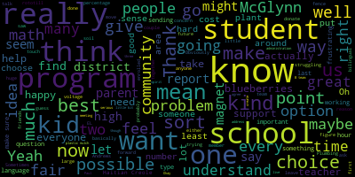
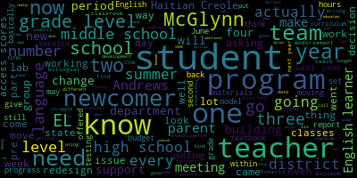

AI-generated transcript of Medford School Committee Meeting May 21, 2018
English | español | português | 中国人 | kreyol ayisyen | tiếng việt | ខ្មែរ | русский | عربي | 한국인
Back to all transcripts
[Burke]: Present, seven present, none absent. All rise and please salute our flag. I pledge allegiance to the flag of the United States of America and to the Republic for which it stands, one nation under God, indivisible, with liberty and justice for all. Approval of the minutes of the May 7, 2018 meeting. Motion for approval by Mr. Benedetto, seconded by Mr. Russo. All those in favor? All those opposed? Motion passes. Approval of the tabled minutes of April 9th, 2018. Motion for approval by Ms. DeRusso, seconded by Ms. Mustone. All those in favor? All those opposed? Motion carries. Approval of bills, transfer of funds. Motion for approval by Ms. Vandekloot, seconded by Ms. Kress. Question, Mr. Ruggiero.
[Ruggiero]: So I'm just trying to find the page number here. It's from the warrant, 18-0-1-3-8. This is the minimum regional high school tuition out of state, out of, sorry, district tuition expenses.
[Burke]: Which page are you on?
[Ruggiero]: Eight of 11, excuse me. It's fourth from the bottom. I just wanted to know, what are the two programs that most of the students are enrolled in?
[Patterson]: I don't know that it's just two programs. I don't have a specific breakdown of which programs can certainly look into that for you.
[Burke]: Milestones. Is that correct? Milestones?
[Ruggiero]: It's the Minuteman Regional High School and Vocational High School. Oh, Minuteman.
[Burke]: Out of district. Mr. Belson, did you want to say? Minuteman?
[Belson]: Are you looking at Minuteman or Milestones? Minuteman. OK. So Minuteman is a vocational technical chapter 74 program. Sometimes the payments are grouped. And I think the instance on the 63, is that what you're asking? Yeah, the 63 and the 25.
[Patterson]: I think that was, what do you call it, a payment that was- He's inquiring what specific Chapter 74 program they're enrolled in. I don't have that.
[Ruggiero]: Do you know of this program, what is the one that most of the students are enrolled in? Plumbing. Is it plumbing? Is that correct? Plumbing still?
[Belson]: Not really, not really. It's changed. I mean, they have a lot of kids in horticulture, believe it or not. By next year, they're likely to have two or three kids. Okay. Because it's really going down. It went down from 50 kids.
[Ruggiero]: How many kids do we have currently in the program?
[Belson]: Probably, what, three or four? Seven right now, maybe?
[Patterson]: Six or seven at minimum. Nine.
[Belson]: Nine at minimum, that's including Essex, no?
[Patterson]: No, Essex is separate.
[Belson]: Okay, all right.
[Ruggiero]: Could you just give me a breakdown of the program when you have time? Certainly. Can you give me a breakdown of what programs are enrolled in? Absolutely, ma'am. Thank you.
[Burke]: On the motion for approval. Roll call vote, please. Madam Secretary.
[Kreatz]: Mr. Jones. Yes. Mr. Rousseau. Yes. Mrs. Van der Kloot. Yes. May I vote?
[Burke]: Yes. Seven in the affirmative, zero in the negative. Motion passes. Approval of payrolls. Motion for approval by Mr. Benedetto, seconded by Mrs. Van der Kloot. Roll call vote, please. Mrs. Benedetto. Yes. Mrs. Crutchfield. Yes. Mr. Jones. Yes. Mr. Rousseau. Yes. Mrs. Van der Kloot.
[psVhVz9ZIEQ_SPEAKER_09]: Yes.
[Burke]: Yes, seven in the affirmative, zero in the negative. Motion passes. Report of secretary? None? None? None.
[Van der Kloot]: Ms. Van der Kloot? May we take community participation before the report of committee? Sure. Committee of the whole.
[Burke]: Motion for suspension of the rules offered by Ms. Van der Kloot, seconded by Mr. Russo. All those in favor? Aye. All those opposed? Suspension is granted. Community participation. First item, Anthony Petrellis, community buzz off event. Mr. Petrellis and Mr. Murphy? Frank, you need not come forward. Hello, name and address please.
[ACxsV5H4ehA_SPEAKER_12]: Anthony Petralas, fifth grade teacher at McGlynn Elementary School.
[Chris Murphy]: Chris Murphy, 70 Windsor Road.
[ACxsV5H4ehA_SPEAKER_12]: So we just want to say thank you for taking the time to allow us to speak here tonight. We're here to promote our event that we're running in Medford this year, which is the One Mission Buzz Off. It started about five years ago. We had a student at McGlynn who passed away of cancer, a third grader. And it started off as a few teachers going to Gillette Stadium every year to buzz their heads in his remembrance. And last year was the first year that we decided to host our own fundraiser for it before we traveled up to Gillette. We had a really successful fundraiser. We set a goal for $3,000 and we raised over seven. So we had a lot of community participation. We had over 100 people attend. And we were really excited and we thought this year it would be great to actually host a community buzz off ourselves. So we're not only gonna host our own fundraiser in Mefford, We're also going to actually be buzzing that day. So we've had, you know, our team grow from year one of four people going to Gillette Stadium to buzz their heads to now over 20 people who are going to be buzzing their heads at the event. And it's at John Brewer's Tavern, Saturday, June 2nd from 6 to 11 o'clock at night. The event, we're going to have, you know, 10 to 12 small raffle items, 10 to 12 large raffle items. We have KBK Sports coming in, sports memorabilia place to do a sign on auction for us for the night. We have a 50-50 raffle. We're going to have a cornhole challenge. And we have barbers and hairdressers coming in to be buzzing people's hair at the event. I know the mayor is going to be participating and helping out in some aspect with it. And I know we're really excited about the community participation. This year we were able to have the police and the fire presidents of the union have a contest of who could raise more money between the fire station and the police station. to help us raise money for our event. And we couldn't be more excited to have the community involved. And we came to city council last week and spoke and we got a great, when we left that day, we had a lot of people emailing us and calling us to join the team or to help out in some capacity. So we were really excited to be able to speak there and we felt coming here, we could just spread the word and let people know about our event. So this is why we're here presenting to you guys.
[Van der Kloot]: It's great to see you again. This was a great event last year, and I'm so glad you're here and going to continue the tradition. So thank you very much. Absolutely.
[Burke]: Thank you so much for taking this on and moving it back home. We'll call it home. More or less home. And thanks for bringing it here. Of course. We really appreciate it. It is a great community event, and you guys are wonderful for doing this and continuing to do it.
[ACxsV5H4ehA_SPEAKER_12]: Thank you.
[Kreatz]: I just wanted to say thank you also. It was a great event. I attended last year. It was so much fun. And I'm happy to also read that the students at the vocational school created the t-shirts and the high school, the video department made a great video. So that's fantastic. And I think I saw it already posted on like Facebook with the blog and I continue to share it once it gets closer.
[ACxsV5H4ehA_SPEAKER_12]: Yeah, absolutely. There's been a lot of the schools have been promoting it on their parent teacher group pages and so on. You know, we're anticipating a lot of people and we're pretty excited about, you know, what the turnout will look like.
[Chris Murphy]: I know you want that. I just want to let people know they can still join the team. You can sign up that day, make a donation, get your head shaved that day, or you can join the team online at buzzforkids.org, actually join the team, and then you can solicit donations through the website. If there is anybody watching that wants to donate, online that can't go is buzzforkids.org and just search team emo and you can donate directly to the team and we do you can still sign up you can join that day. We have teachers, board and commission members, we have cops, firemen, I think we have a DPW guy. We don't have any elected officials yet. We have women on the team. I think we have three women on the team this year. We have three women who are buzzing their heads so far. Just saying. So it's going to be periodic. It's going to be periodic. Between 8, 830, I know the firefighters, I think, have said they're going to be coming in throughout the night, getting their head shaved, some of the cops as well. Can I shave one of their heads, please? Periodically throughout the night, I think you'll see. We're going to try to spread it out. It's going to be a really fun event. We had a really great time last year. You know, Anthony's been doing this for a couple of years now. It was his goal to us to do this. You know, our goal is to make it bigger and bigger and bigger and, you know, eventually just, you know, an all-day affair one day, hopefully. And you guys in the City Council have been excellent. John Brewer's Tavern has been awesome in helping us with this. So we're really looking forward to this. We're looking to, you know, we set a goal of 10,000. Hopefully we beat that.
[DiBenedetto]: I was just wondering how many people buzzed their heads last year and what's your goal for this year?
[ACxsV5H4ehA_SPEAKER_12]: So last year I think we had about seven or eight people on our team buzz. Our team was over like Yeah, maybe 10, somewhere around there, yeah.
[Chris Murphy]: I don't think you have a set amount of money you have to raise as an individual when you do a community buzz off. So it's just all the money that's raised through the community goes to the actual charity. So we can be a little looser on what people actually have to raise to participate.
[ACxsV5H4ehA_SPEAKER_12]: Yeah, last year we raised, as a team, when it was all said and done, about $35,000. So we're hoping to kind of get within the same ballpark, you know, hosting our own event this year, as opposed to just going to Gillette that day. So, kind of new ground for us.
[DiBenedetto]: So will you guys get buzzed at John Brewer's, or wait and get buzzed at Gillette?
[ACxsV5H4ehA_SPEAKER_12]: Yeah, we're all gonna just do it at John Brewer's that night, yeah. So the actual buzz off is the next day at Gillette Stadium, but we're going to do it the day before, yeah. So one mission's been great in sending us all the stuff that we need, t-shirts and banners and everything else that we're going to be decorating that night. So we're excited. We're really excited to try something new and see how it goes.
[Burke]: Excellent. Go team BMO.
[ACxsV5H4ehA_SPEAKER_12]: Thank you so much.
[Burke]: Thank you for taking the time. Thank you. We'll see you there. Also, while we're into suspension, community participation, we were supposed to have Sean Driscoll Gomez from CCSR, but I believe he is receiving an award tonight up at the high school, so we have three individuals that will be presenting. It's the Orkton Project. Your name and address, please, for our record. My name is Kaylee Boulay.
[R49wqTZ5YIg_SPEAKER_08]: My name is Emily Gatti.
[R49wqTZ5YIg_SPEAKER_09]: My name is Parviti Rana.
[R49wqTZ5YIg_SPEAKER_08]: Welcome. Hello Mayor Burke, Superintendent Belson, and school committee members. My name is Kaylee Boulay and I'm here with Parviti Rana and Emily Gotti. We are students in the ninth grade at Medford High School and we would like to present our CCSR project to you. CCSR, also known as Center for Citizenship and Social Responsibility, is a group that creates projects that work toward helping others and the environment. Our project is known as One Sapling at a Time, and we are here today to ask for your permission to create a fruit orchard on the Medford High Campus.
[R49wqTZ5YIg_SPEAKER_09]: Good afternoon once again. As determined ninth grade students, we strive to achieve our goals to make a community a better place, Our project, as you heard, is titled One Sapling at a Time, and we would essentially like to place an orchard in the back of the Medford High campus. We would specifically like the trees to be placed on the hill outside of the community school's entrance, which if you see in the packet you have received, it's on the second page. For our project, we are working with the CCSR, our advisor, Ms. Smith, Ben Barkin, Michael Ruggiero, kindly. We would like to proceed on our project in the fall of 2018. We would like to accomplish this by using generous donations of Mr. Ruggiero, which include blueberry bushes, labor, and soil preparations, and Mr. Barkin, which include the trees. We also will receive a small amount of funding through the Cummings Foundation, which is a CCSR mini-grant. Currently, we are seeking additional grant funding as well to support our project. Now you may have questions about maintenance, in which I will guide your attention to my colleague, Emily.
[ACxsV5H4ehA_SPEAKER_00]: Good evening. Good evening. Again, my name is Emily Gatti, and I'm a freshman at Medford High. So harvesting and caring for the plants is obviously not going to be an easy feat, and it's definitely not one that can be done alone. So our solution to find help would be to reach out and recruit school clubs, such as the CCSR, or other clubs to help sometime after school or on another planned date to help harvest and plant the trees during peak times, which, as Praviti said, would be later in the fall of this year. And we would also like to reach out to any other Medford High students willing to sign up, and we would, in turn, provide community service hours to them. We could also ask community volunteers, such as the Redemption Hill Church and the Medford Family Network garden play groups.
[R49wqTZ5YIg_SPEAKER_08]: We feel that planting fruit trees on the grounds of Medford High will have numerous benefits. The fruit trees will provide fresh fruit that will be handed out for no charge to students at the Medford High School. The fruit trees will provide an educational opportunity for students to learn about the planting and harvesting of the fruit trees as well as the life cycle of the trees. Having fruit trees on the grounds of Medford High will beautify the grounds on the outside area of the school by adding color and making it a more positive environment for the students. We feel that this project is very important for many reasons, including it will make Medford a nicer and happier place. Helping the environment makes me feel happy and feel like a better person. I want to make not just the environment a better place, but the people living in it too. I want, we want to plant this orchard for it to benefit students at the Medford High School and people that live throughout Medford. This one change to Medford High will make the grounds in Medford High a more positive environment and a more positive school.
[R49wqTZ5YIg_SPEAKER_09]: You may be wondering why this project is so important to us. As ninth graders, we want to beautify the school and improve the general lifestyle of the school. Currently, the Medford High School has a basic connotation of a cement building, but with a unique orchard, it's a whole boost. And, I mean, I haven't heard of any other school with an orchard right in their backyard. And it's a really unique aspect that I think would be a great add to Medford High.
[ACxsV5H4ehA_SPEAKER_00]: And for me, this project is important because as of now, I've been at Medford High for almost a year, and I consider it to be a home away from home, just as it is to many other kids. And recently, I attended the Day on the Hill event in Boston, and one of the issues that we talked about with Medford High is trying to increase the enthusiasm of Medford High and in creating an orchard we could boost school spirit in the students because it sets Medford High apart from other schools. And it creates a beautiful place to learn. Having an orchard in the fells and adding new plant life will hopefully recharge the likeliness of the student body as well. Do any of you have any questions for us?
[Van der Kloot]: Ms. Van der Kloot. So first I want to say I think this is an absolutely wonderful idea. When that entranceway was refurbished some years ago, the idea always was that there should be plantings on that hill adjacent to the steps. And it's always made me very sad that that, you know, it's just kind of a dull space rather than an exciting space. I'm very enthusiastic about this project, and I really appreciate the idea. I have only one concern, which, you know, maybe you've thought about. I could see that a fallen apple could make a great missile, ball, substitute ball. So, projectile is probably the word that I really want. So I just want to ask if you've considered that, and how would you make sure that students are respectful of the fallen fruit and that we wouldn't find it being used for target practice against the side of the school?
[R49wqTZ5YIg_SPEAKER_09]: Yes, we have considered that, and along with the maintenance, with the people volunteering, we would like to create a sort of schedule to maintain the fallen apples, so we could keep as many apples from off the field as possible.
[Van der Kloot]: maybe some signage, too, about this project and what it is might help so that the students really are respectful of it.
[R49wqTZ5YIg_SPEAKER_09]: Of course, there will be rules and regulations to the orchard for no harmfulness being done.
[Van der Kloot]: Also, in terms of the slope of the area that is to be planted, is that slope okay for the trees that you've suggested? Does it matter that there's a slope?
[R49wqTZ5YIg_SPEAKER_09]: Actually, we've met with a landscaper who has laid out for us the position of the trees, which Ms.
[ACxsV5H4ehA_SPEAKER_27]: Smith will address. Yeah, the slope actually is beneficial. Oh, great. Yeah, so it gets all of the sun, so they'll get, you know, all the way up the orchard, they'll get sun kind of evenly distributed that way.
[Van der Kloot]: Okay, and how about watering the trees? making sure they've got enough water.
[ACxsV5H4ehA_SPEAKER_27]: Yeah, there is water access on the side of the building, so we'll have to figure some way to do that. But I know I think our buddy Mr. Ruggiero over there has experience with drip irrigation and can help us set something up.
[Van der Kloot]: And I'd like to also thank my colleague for donating the blueberries and being a help in this project. I think it's great, girls. Thank you so much for your presentation tonight.
[DiBenedetto]: Ms. Benedetto? First of all, I just wanted to express how impressed I am with your presentation and how comfortable you seem coming up to the podium. The colored pictures, really knowing all your facts, and also giving your own personal reasons why it would matter to you really brings that emotional peace home. I just wanted this time to motion to approve the apple orchard and all the other fruit at Medford High School. I think it's a great hands-on learning opportunity for not only our high school students, but also all students educated there, especially our early childhood students. So, at this time, I make that motion.
[Burke]: Motion on the floor for approval, seconded by Ms. Vander Kloof. Mr. Russo.
[Ruseau]: Yes, thank you. This is lovely. I think it's an exciting project and certainly I'd be happy to not look at that current field. The soil is, I mean, I realize these are not just fruits where you have to care a lot about a regular vegetable garden where soil matters a lot, but is the soil acceptable as it's been tested and is perfectly fine?
[Burke]: Yes.
[Ruseau]: Thank you. That's all I wanted to know.
[Burke]: Very good. Mr. Ruggiero, you have the floor.
[Ruggiero]: So we had the reddismith and the landscaper and I, we walked the area and sort of viewed and we also did some soil tests. For the high bush blueberries, the soil isn't quite acidic enough. If possible, I'm happy to donate the plastic mulch, the thyme, and also the sulfur. But if possible, I'd like to start preparing the soil so we can get the pH. Right now the pH is around six, which is It's way too high for blueberries, so we have to drop that around to about 4.5 or 5. So I'm happy to donate all the preparations for blueberries, but these other plants that were chosen, I looked them up and I talked to some horticultural friends. These are all really great plants that they've chosen. We just have to touch up a little bit with the blueberries.
[Burke]: What work is involved in doing that?
[Ruggiero]: Well, it depends if the club would like to plant this September. There's a couple of options that we have. It would be best to rototill the area for the blueberries. I already have about 30 plants and containers, and I have all the plastic mulch. So what I would recommend would be to rototill the area, spread some sulfur, and then give it a couple of months, and then we can apply some, I have prepared some acidic wood chips, so that'll help as well. And I would prefer to get that done as soon as possible. It'll take me probably about a couple of days, I guess. I just need to rototill it, lay down the plastic mulch. We have to measure it. I also can, I'll send down all the drip irrigation.
[Burke]: Very nice. Excellent. I just have a question also. Oh, yeah. If we're curious to see.
[Kreatz]: Yes, of course, happy to. Ms. Kreatz. I just wanted to thank you for the presentation. It was excellent. And the brochure with the pictures, I can see the vision. It looks so beautiful with the plants and the trees and the blueberries. Thank you, Michael, for your donations. And I just had a question about the deer population that is in the fells. Do you think that we're going to attract deers and maybe coming close to the school.
[Burke]: This would be up to the school committee, how we handle this problem.
[Ruggiero]: The way I handle this on my farm is we have an electric fence. I'm happy to, once again, I'll donate the T-poles and the wiring, and I'll set it up for everyone. My fence has 7,000 volts that run through it. Obviously it won't hurt anyone, but it could be a great prank for kids to mess around with, so we'll have to talk with the community. If you want me to install it, we definitely need to shut it down during school hours, and we'll have to talk. But it's possible we could turn it on once school is not in session, and then I could put it on a timer. and then we can shut it off once it's on eight o'clock and deer won't bother you.
[Kreatz]: So if a person was to walk towards the electric fence, would they get shocked? Oh, yeah. Because I'm just one of the people with that night.
[Ruggiero]: We could actually choose a lower voltage. I have a higher voltage on my farm because I want the deers to get shocked. But if we have people around, we can have a lower voltage. It's basically like someone, a little bee sting. Like someone hits you kind of hard with a pencil eraser is what it feels like. It doesn't leave any permanent damage. It's humane to the animals as well.
[R49wqTZ5YIg_SPEAKER_09]: I believe with the people again, the rules and regulations would also follow.
[Ruggiero]: Yeah, we'd have to figure out. If you want, I'll be happy to lay down the fence.
[Unidentified]: We'll hold off.
[Ruggiero]: Or we'll hold off. That's fine too.
[Burke]: Liability, we're not going to.
[Ruggiero]: No, I understand.
[Burke]: Good question, Kat. Ms. Kreatz. Are you all set, Ms. Kreatz? Yes. Well, thank you, Carly, Robert E., and Emily. Thank you so much. And your adjectives that you use, boost and recharge, great words, and they mean a lot. And I know that many of the students will feel the same way as you. So it's a great project. Thanks, Sean, for us as well. I know he won't be able to do any of the hard work, though, right? He's graduating. So it's up to you three.
[Van der Kloot]: Ms. Van der Kloot. I think that one of the things which makes this particularly is that the fact that you guys are just freshmen now and you're gonna be able to, you're gonna have a piece of this throughout the rest of your high school career. And that really makes this even more meaningful than if you were seniors going out the door. So, thank you so much.
[Burke]: Thank you. Thank you, ladies. There's a motion on the floor. There's a motion on the floor for approval. Roll call vote, please, Ms. Fritz.
[Ruggiero]: I just wanna make sure it's in the committee.
[Burke]: Supporting the tilling. Just coordinate with John. Yes. Yes. Seven in the affirmative, zero in the negative. Congratulations. Great job. Nice job tonight. Thank you. Yay. Also while we're in the suspension, we have a report on the student award for foreign languages. Would you like to come up here and say a few words so you can speak out to everyone? Hello, Mr. Carlin.
[ACxsV5H4ehA_SPEAKER_09]: Hello, good evening. The floor is yours. Thank you. So I am pleased to announce that a student, Medford High School sophomore, Cheng Cheng, scored in the top 1% of international Italian exams. She was the only one. She's not the only one in Massachusetts to do so. Of course, she got a gold medal and a check for $50, but the exciting part is that she also got a two-week all-paid expense to study in Italy, of course, in Italy, which includes tuition and accommodations. So there are three schools in Italy that she can choose from. And she also gets $10, excuse me, not $10,000, $1,000 to help with the cost for the airfare. So we're very proud of Jane. And she's here with her family. Thank you very much.
[ACxsV5H4ehA_SPEAKER_06]: You can say it in Italian if you want. In Italian. Say something in Italian. Thank you for everything.
[Burke]: So the Medford Public Schools is proud to recognize Chen Chang, gold medal recipient, National Italian Exam 2018, signed by all members of the school committee. Congratulations, Chen. Wonderful, great job. You must be so proud. We are very proud, thank you. Very nice, thank you. Oh, would you like to do a picture with the parents and all the school committee members?
[psVhVz9ZIEQ_SPEAKER_09]: Everybody get closer.
[Nelson]: Say pizza.
[Burke]: Right, we haven't approved him yet. Yep, we have them.
[Belson]: So there is none? So we don't have a full minute. OK.
[Burke]: All set? Motion to revert to the regular order of business. All those in favor? All those opposed? Motion passes. The committee of the whole minutes are not complete from May 17th. They will be provided to us at our next meeting, correct, Mr. Superintendent? So the packet that you have is actually for the old business item. So if you could just move that to the back. Okay, report of superintendent. Report on building bridges to kindergarten. Mr. Superintendent.
[Belson]: Call upon our assistant superintendent to give this report.
[Burke]: Ms. Caldwell.
[Caldwell]: Good evening, everybody. So our Building Bridges to Kindergarten took place on Tuesday, April 10th at Medford High School and on May 3rd at the Roberts Elementary School from 7 to 8 p.m. Extended hours for registration were offered on March 20th and were offered again on April 10th as well. As you know, we've had some inclement weather this past winter, so we had to rearrange our schedules. Maria Michelli, who was a kindergarten teacher at the Brooks Elementary School, presented to our new kindergarten families what to expect when their children go into kindergarten, and as you know, we had a lot of anxious parents mulling about. There were discussions and questions about curriculum, snacks and lunch, safety protocols in each building, the before and after school programs, and how the kiddos ride the bus. Shelly Gross, our early childhood director, was available to discuss transition plans for preschool, and after school, and we had before school, as well as CPAC. Attached is the letter and flyer that we sent home to parents. This information is also listed on our website. Our enrollment is consistent with what it has been in the years past, but I actually checked with Maria Ibrahim this morning, and we're up 13 students at the same time as last year. And actually, the Columbus Elementary School has increased by a good margin. Kindergarten Open House was on Wednesday, May 9th, at each of our elementary schools, from two to three o'clock. Early Childhood Director Shelly Gross was available to provide a welcome packet to each of our families. And before and after school programs still have the registration in progress. So I just wanted to show you what the kindergarten packets look like, that each family, this was designed by our students, and inside the bag, each of our families received a Welcome to Kindergarten packet that goes to parents. For children, this is what we do in kindergarten, and just a couple of manipulatives and some toys for the kids to talk so they can write. So each of our parents and families received these little gifts and welcome when they went to the elementary schools.
[Burke]: Very nice. Are there any questions? Mr. Ruggiero.
[Ruggiero]: I just want to comment how awesome that little bag is. Thank you so much for putting that together as a father who's about to have a kid go into kindergarten. It's a pretty frightening time. So I think that makes a lot of people a little more nervous. It is a scary.
[Burke]: And it only gets worse.
[Ruggiero]: Yeah, I know. Or so I've heard.
[Caldwell]: It is a difficult time. If it's your first student going, a child going into kindergarten, you don't know what to expect. So our kindergarten teachers are available to talk to you and to show you around the rooms, the different centers that they have the play areas, which is still really important because kids learn through play that we do in kindergarten.
[Ruggiero]: Do you know, have you heard much interest expressed in the community about starting a pre-K program that's also available for everyone?
[Caldwell]: Oh, for everyone. Because we do have preschools available. We have three or four at the high school. We have two at the Brooks preschool. Each of the other schools have at least one preschool. But you're right, there's a cost to it. I would love to have universal preschool. I think it would, if we can get the children as early as we can, it would be a great thing to do. So I'm on board.
[Ruggiero]: Do we have a sense of what the cost of that kind of program would be in the community?
[Caldwell]: I do not. Maybe I could look into that for you.
[Ruggiero]: Sure. Could we ask that as a report from the superintendent that we could ask to see how much a universal 3K program would cost Medford? I know there's a cost associated, but it'd be interesting to at least know the figures. Thank you.
[Burke]: Okay.
[DiBenedetto]: Mr. Benedetto. Thank you. Diane, we were talking recently about after school and before school programming. Were there a lot of new enrollees with this kindergarten open houses for those programs? Are we going to be able to accommodate all of our students?
[Caldwell]: So yes, the answer to the question is yes. Most of our new kindergarten parents want before and after school. So we are trying to increase our Columbus after school program, because that's growing in leaps and bounds. The Brooks is always a large program. And as you know, the staffing is always an issue. The before school program runs pretty smoothly, and that's mostly because it's an hour before school begins. But our staffing does change. I know this year I have a teacher at the Brooks School that won't be able to do it next year. So we're always searching for the right people to work with the kids and make sure they get breakfast. But the after school is going to be our charge.
[DiBenedetto]: Okay. We did get an email from a prospective new parent for next year, and they were concerned especially about the capability of after school care. So we are going to assure that all new students that enroll are probably going to have a spot?
[Caldwell]: I cannot say all students yet. I would love to be able to tell you that, but I can't do that yet. We have to make sure that staffing is in place. before we enroll all. I would say two of the four schools are consistent. Our staffing is consistent at the McGlynn and at the Roberts in terms of the after school program. We do have to look at the Columbus Elementary School because that's grown in leaps and bounds for after school, not so much before school. And the Brooks, we've always had a large number of children who want to come in. Right now, I think we only have a few on the waiting list for the Brooks School, but we just need to get the staffing in place.
[DiBenedetto]: And when would we know and be able to tell parents? Because I'm sure if they don't qualify for an after school program, they need as much notice as possible to have a safe place for their children.
[Caldwell]: Yes. As you know, Shelly Gross is in charge of the after school program, and she is retiring this year. So we're in the process of looking at a possible coordinator for before and after school, putting it under one umbrella. And once we get that in place, we're hoping that parents would know, at least in July, whether they're in the program or not, so that they can make other arrangements if they have to. Thank you. You're welcome.
[Burke]: Good. Is there a motion on the floor to accept this report? So moved. Seconded by Mr. Benedetto. All those in favor? Aye. All those opposed? The motion passes. You're welcome. Report on Columbus Afterschool Math Tutoring Program.
[Caldwell]: Hello again. So I provided each of you with an updated document because, unfortunately, when copies were being made, I didn't get the back pages, so I wanted to give you the new and improved version of the after-school program. Dr. Kathleen Kay is with us this evening in case you have any questions, but she consulted with her staff and administrators who worked on Tuesdays and Thursdays from January 30th until May. She's talked about the strengths and some of the concerns we had and maybe some recommendations for next year if we continue to have this program. I would like to take a moment to thank the teachers and administrators, specifically Dr. Kaye and Nancy Sherman-Hudson for working so hard to make this program a success and implementing the pilot program. Many thanks to our National Honor Society students. They were volunteering to work with the children, specifically Erin Diskin. Erin Diskin is actually the daughter of one of our secretaries at the Columbus Elementary School. And she came to me one day with this proposal about wanting to help the kids at the Columbus Elementary School. She had a lot of things in place. She wanted to do snacks. She wanted to make sure that she understood the behavior mechanisms and what teachers were going to be doing to work with their kids. And she promised me other National Honor students to help out as well. So I want to thank Erin for her work, and her brother Danny who also helped us out, Jenna Agnone, Sophia DeMayo, Hannah Chan, and Michaela Rothermel. I'd also like to thank the teachers who went out of their way to work with us, Ms. Rebecca Cogbill, Ms. Karina Merg, Ms. Victoria Cavallo, Ms. Noelle Lattarella, Ms. Patty Donley, and Ms. Lisa DiPersio, the teachers of those grade levels at the Columbus Elementary School. And I need to acknowledge Ms. Christine Patterson and Tatiana Hall for helping us arrange the transportation for these children. So if you look at the next page in your packet, it tells you a little bit about what Dr. Kathy Kay put together There's a lot of reading. You can do that on your own, but I just came up with some highlights for you. What I gathered from this math tutoring program is that many students participated in the program. The extended day and bus was just such a plus for the kiddos. So these are the highlights. These are the good things about the program. Teachers and high school honor class students stepped up when they needed to. And the timing of the program was great, too. It was only 45 minutes, and that was just enough time for the kiddos to finish school, have a snack in the cafeteria, and then the teachers came and brought them up to the classrooms. But we do have some concerns moving forward about maybe some ways we might be able to change things for the program. One, Dr. K thought we might want to break this up into two sessions. And she's here tonight. We can go into more information on that if you would like. We also want to work with more targeted groups, so instead of opening it up to every single child to participate in, choose the students who actually need the most amount of help, because those are the kiddos that we need to work with the most. We need to look at our data and our analysis through our teachers. One of the other things that I gathered from the report from Dr. Kay, was that we need to be consistent in the way we manage the program. So some teachers were working on Tuesdays but not on Thursdays. We feel that it's a better fit for the children if we have the teachers who are going to work Tuesdays and Thursdays for consistency. But I'd like to invite Dr. Kay up to the podium to see if she'd like to add anything or if you have any questions.
[Kathleen Kay]: Good evening. I think Mrs. Caldwell did a great synopsis of the program and how it ran this year. I do think the biggest pitfall was that we didn't open it up to everybody. So some of the children who were there, really math was a strength for them, and so it was good they were getting more math, but some of the classes had 20 kids in them, and it was almost like doing another math class. because what we wanted to do was make it a tutoring program so that maybe there were six to eight kids tops in a group. And so perhaps we could still afford to have more children involved if we had two sessions. So maybe we took half the kids for the first eight or six weeks and then the other half for another eight or six weeks. So the kids can get a little bit more targeted instruction. I know that the teachers really wanted to look at our data. So some of the kids who didn't do well on MCAS last year, we didn't want to just focus on, we wanted to help those kids who look like they would have the chance to move into the next category. And some of those children were doing well in math class on the day to day, so maybe those just aren't good test takers. So maybe what we need to do is have a little bit more of tutoring that focuses on that need to make the kids, because now it's online, to be more proficient at using the computer and answering questions in that mode. The other piece was that some of the kids were not doing well in math class, but they did okay on the MCAS, and those kids might have fallen through the cracks. So what we wanted to do is really kind of hone it in a little bit more, make it a little bit more concentrated, and I guess, if you will, make it more of a a suggested program. We suggest that you come. Some teachers did write that on some of the forms. We really would like Johnny to be involved this year, but if it was a little bit more of, I don't want to say invite, but a more tailored program to fit the kids' needs so that the teachers could really work in a small group. I know Mrs. Sherman-Hudson and I worked with a group, I took Tuesdays and she worked Thursdays, and it was a large group. Sometimes there were some behavioral issues because it was so large and you're sitting here trying to help one group of children, where the others are kind of like, ah, they don't really need to be there, because they were good at math. So that would, I think, be the biggest thing. I think the teachers, if they would be more apt to sign up for it, too, if there's a beginning date and an end date, so two sessions, I'll do six weeks, and then you do the other six from the outset.
[Burke]: Mr. Benedetto.
[DiBenedetto]: Thank you. I'm really glad that we were able to offer this. This came about because of MCAF scores, and was there any, growth, any way to show growth from the beginning of the program for the students to the end of the program?
[Kathleen Kay]: Yes, the teachers all gave a pre-test and a post-test at the beginning and the end. Some of the children did better, some of them did not, some of them stayed the same. So the average, when you take the average of the students' scores, they all did better, but that's relative to where they started at for some of the grades. I know the third grade group was really, really large. So when Mrs. Sherman-Hudson and I weren't teaching a class because we had someone who had to leave the position, we would go up and support in that classroom. And the teachers did a lot of great center-type activities or learning games, which would just be much more effective if the group wasn't quite so large. So, like I said, there were children who did improve, you know, not to the degrees that we would have hoped if it was a little bit more concentrated.
[DiBenedetto]: Also, when I saw the amount of absences, maybe some regulations within the program, like if you're absent more than, if it's a six-week program, if you're absent more than three times, we're gonna give you a spot to the next person on the wait list. And maybe have a contract for people rather than inconsistency, because the real, we wanna put people that have the opportunity to grow in those spots, and we don't wanna.
[Kathleen Kay]: I think part of it, that may be the reason, because some kids, were invited and their parents signed them up, and then, oh, I don't wanna go, and you know, but I think if we told the parents it was really important, then they needed to be here, we were suggesting they were there, that we might have a better success rate there.
[DiBenedetto]: I have two more questions. One is what was the cost involved, so that way we could plan for next year, because I do think that this may be necessary, depending on MCAT scores, and we'll know that in October, or maybe a little sooner when the superintendents get that data.
[Caldwell]: So the cost is the cost of a bus every Tuesday and Thursday, and I think Ms. Patterson probably knows the answer to that.
[DiBenedetto]: The cost of the teachers, is that right? Could we get a report of a breakdown of that through the mayor to the superintendent? Could we get a report of the cost involved so that way we can make it a priority during our budget season? And then like, you know, or if math, coaches or during the day type situation might be more affordable. But I like the idea of having a later time at different schools for kids to go home and they can take advantage of other programming, not just this programming at the school. It's a great advantage for students that have no other way home.
[Kathleen Kay]: And the bus did really work well. I'm surprised, though. I thought more students would take the bus than did. There were a number of children who got picked up still. And that was encouraging, too, because sometimes we always think they wouldn't stay after if there wasn't a bus available. And that was nice to see.
[DiBenedetto]: So we should know how much the bus was utilized, and if it's necessary, or a smaller bus, or any ways that we could save money and still provide the programming and not be wasteful. So my last question is really not to both of you. The need of this came out because of last year's, especially former fifth graders, scores on MCAS. So I'd like to know how we're continuing to follow those students in the sixth grade. And if anybody is checking in, I know we've asked before and reports were given to us. Now that we're getting closer to the end of the year, I think that we should have an update on those students and make sure that they received everything they needed for this current MCAS that they just took. And we want a report on how those specific students did as soon as we get the release of their MCAS scores to make sure those students don't fall through any cracks. You know what I mean? Are you referring to the current fifth grade students?
[Burke]: Current sixth grade.
[Caldwell]: No, current sixth grade. Well, I did provide a report earlier for the current sixth graders. spoke at the time it was to Mr. Edwards and to Mr. DeLava that provided me with the information on how the students were doing and they were making steady progress. So I was happy to notice that.
[DiBenedetto]: I'm just asking for a follow-up now that they've completed their MCAS. I want to see the growth from their fifth grade to the sixth grade MCAS scores and make sure that every student that might not have done well last year is moving and showing growth, and if not, they get the services they need in any way, shape, or form that we don't.
[Burke]: Next fall.
[DiBenedetto]: Yeah.
[Burke]: Next fall, we'll get an update.
[DiBenedetto]: Right. So if that could be added to the reports request list for October. I just want to make sure we don't drop a link.
[Burke]: That we track.
[DiBenedetto]: Yeah.
[Burke]: Track progress.
[Ruggiero]: Thank you.
[Burke]: Mr. Ruggiero.
[Ruggiero]: Yeah, thank you so much for this report. First off, I'm just educational and a huge fan of after-school tutoring programs. I know for my own students, I feel like, you know, during class, I could just sort of run them in circles sometimes, but when I was one-on-one with them, that's when the learning really happened. But to that point, I noticed, you know, in your report, as you mentioned, you know, the ratio of students to teachers, probably not ideal. Do you think that if we added two more teachers to the program, that would have really solved the problem? Or do you think, how many teachers would you want it ideally?
[Caldwell]: So if I just want to, it's not easy to get the teachers to do this, first of all. Teachers have worked a long day, and now we're asking them to do planning, organizing for another 45 minutes to an hour. That would be one of the issues that we would have to come up with. I still think that we just need smaller groups, that that would really give us a targeted assistance we need to do with the kiddos.
[Ruggiero]: Cool. Please let me know. And so if you ever need help in that way, I'm always happy to find one or two days a week to help you out. Well, it's good. I need the teaching hours for my license anyway to keep it good. My second point is, can you just give me a sense of what percentage, I know maybe you don't have the numbers handy right now, but of the 68 students that participated in the program, how many used the bus? Just ballpark.
[Kathleen Kay]: Ballpark, I would say probably one. Oh, really? I mean, some days it seemed like there were a lot of kids, and some days it seemed like most. Do you think that... A lot of kids belonged to the after-school program as well, so they didn't need transportation. They went straight up to the... Right, right.
[Ruggiero]: The next question I have for you is, do you know why all these students were participating? Has there been any conversation with the parents? Is it just that their parents want them to have more math time? The students are hungry for more math time? Or is it they saw their MCAS scores and it was like, let's just put out fires?
[Kathleen Kay]: You know, I think that it was, everyone was invited. So you're all invited to the party, and some parents were like, oh, this is a good thing, why don't you go, you know, two days a week. And like I said, for some of them, when the invitation went out, teachers really wrote, I strongly recommend that so-and-so attend this class. So I think it was really parental preference which kids were involved and which kids weren't. There were children that we specifically targeted to, you know, with that, and didn't sometimes.
[Ruggiero]: I mean, in the future, I think that these type of, and I would like to sort of make this point to my colleagues as well, I think that for our school district to be one of the best in Massachusetts, this is the type of program we're gonna have to have district-wide. Because I've seen how effective they can be. I think that's a really good point. a district-wide program if we can, and sort of use Columbus as a pilot, learn what we can from it. So thank you so much for all this hard work. I'm really very excited about moving forward.
[Kathleen Kay]: Well, and thank you for making it available to us, too, because we wouldn't have this information if you didn't support it, so thank you.
[Ruggiero]: As Member DiVendetto mentioned, unfortunately, this program came about sort of in an emergency. We had to do it. But I think that now that the fire is out, there's a lot that we can learn moving forward. So thank you so much.
[Burke]: Ms. Vance, please.
[Van der Kloot]: Yes, thank you. So, obviously, there's a lot we can learn. Smaller groups, more targeted groups, particularly, you know, with the struggling students, and being able to have extra hands like the high school students is great, just so that you can do a little bit more one-on-one. However, I also would like to say, let's say that if this was a six-week opportunity twice a week, that we might also think about. There are kids who excel, and it would be great to have maybe not as long, but if they're excited about math and they want it to come so badly, I mean, in an ideal world, if we can afford it, we should also have maybe a shorter, maybe a three-week, you know, session whatever, for the kids who excel so that we're bringing them up. And, you know, I'd really like to see both of those happen. If we were doing it again next year, this year we did it starting, I think it was in February, was it?
[Caldwell]: January.
[Van der Kloot]: January. Very end of January. Right. So would you do a session in the fall and then a session in the early winter? What would your optimum timing be?
[Kathleen Kay]: I think based on getting the MCAS scores back and having the time to analyze them earlier than January would probably be better, maybe November. But weather is always a problem. But sometimes weather's better in November than it is in... And then we could fit in more sessions that way if we start earlier in the year. To get those kids who may not be succeeding right away in their classwork early, to maybe boost them up so that they can go out of the program and other kids who are continuing to struggle can stay or join.
[Van der Kloot]: Great. Well, thank you. I mean, I think this really sort of lays the foundation for us. And I realize that it is difficult to get faculty members to want to stay and do this, and that we need to be creative and see how else we can get all hands on deck for the kids. But thank you very much, and thank your teachers who participated.
[Kathleen Kay]: It was very helpful that Mrs. Caldwell was able to get us the high school honor society students to help us, too. And I know those kids enjoyed it, and the children who worked with them enjoyed having them there. So even if we had some of our brighter fifth grade students who wanted to help in the third grade, you know, that might be something we could look into too. And then if they had transportation to go home, parents might be more willing to let them stay.
[Kreatz]: Thank you. Hi. Hi. I wanted to thank you for the report. It was excellent. And, you know, I really like the way that you prepared it with all the feedback and the different ideas for the future. And I do like the idea of like the smaller focus groups and then sending out maybe a letter home to parents, detailing everything in the different time frames. And I think at the high school, when they had a grant for the MCAS tutoring, they did something similar like that, where a letter went home to the families, and it was structured. It had all the details in it. And you had to sign that your child would make that attendance. Maybe that would help cut down, of course, the attendance the next time the programs rolled out. I also loved reading about all the positives where some of the students the next day were saying, you know, we did this in tutoring, and they were just more, they felt successful and more confident in the classroom. So I liked reading that. That sounded, you know, that makes me feel very happy for the students that they felt that now they can, you know, maybe accomplish a little bit more with math. And I wanna thank the National Honor Society students for all their help. It was just, that's unbelievable, and thank them. Thank you all.
[Kathleen Kay]: You know, one thing that kind of jumped out for me, having taught some of the kids, was, so the teachers use little teaching tips or clues that they come up with over time that may not be consistent across the grade levels. It's not that it's not part of the math program, it's still they're teaching the skills. One of them is when you divide, you know, a sentence that I taught was, does Mac sell cheeseburgers? For the steps of that you have to do. So I was using the sentence that I had heard Mrs. DiPersio use, who's a fifth grade teacher, but the fourth grade students were arguing with me that that wasn't the right sentence. So what it took away to me was, I spoke to Lisa and I said, you know what, maybe the fourth grade, third grade, and fifth grade team could get together and share these little tips so that third grade can use whatever you want them. You agree together as a cross unit what you're going to do because the tips are very helpful. But if I'm going to have kids arguing with me, that's not the right one, then it kind of loses its flavor, if you know what I mean. So that was just a nice takeaway for me to say that this is a good way for colleagues to talk across grade levels to make the education better.
[Burke]: Mr. Russo.
[Ruseau]: Thank you for the report. For children that had 504s and IEPs, were they fully integrated and supported in whatever they needed?
[Kathleen Kay]: They were in the groups, yes.
[Ruseau]: Yes, yes. Because I noticed there was some commentary about disruptive student, maybe just one or more, I don't know. And I just want to be sure the disruptive did not have anything to do with either of those.
[Kathleen Kay]: No. No, it was just a behavioral type.
[Ruseau]: OK, cool. And the issue of the PTO and the PTO would love to be able to use the bus. Can you explain that? First of all, what did they want and why isn't it?
[Kathleen Kay]: The PTO does after-school programs. They call it the Columbus Clubhouse, which we're trying to get used to the name because it gets confused with the after-school program. So kids tell us about the after-school program. I'm like, well, which one? They don't know. But with the Columbus Clubhouse, there are activities, enrichment-type events, karate, Lego club, pottery, whatever they can get for volunteers or someone that's affordable to come in and teach the kids so that they can stay after school. So some of those children really can't participate because they have no transportation at home. But that would quite possibly mean that we'd need more buses. And then what happens is we have parents manning the Columbus Clubhouse, whereas we as a school are doing the math. So that's one more task now to put onto the school for after hours, and is it manageable, and is there enough room, and how much does it cost, and that kind of thing.
[Ruseau]: Because I know that when I've talked about I'm never gonna get used to the clubhouse name, by the way, but for the afterschool enrichment activities, I mean, in my six years at the Columbus, you know, it's sort of a running joke that it's always the same kids. And that's true. It tends to be. There can be lots of reasons why other kids aren't participating, but it's pretty clear that one of those reasons certainly is transportation. So, you know, figuring, and if we were to reduce the number of students participating in this, by invitation or whatever method happens, I want to make sure we don't end up paying for a bus where there's four kids on it. And so I would just hate to be in a position where we have to decide to cut the bus and lose those four kids when we have another way to fill up the bus, even though it might be more complicated.
[Kathleen Kay]: Well, I think one of the things that might also be a part of the Columbus Clubhouse, it's not long enough. After school is longer. So maybe some of those kids don't come to the after school enrichment clubs because the parents need a longer time. So they can't get them home. And then when they get them home, who's with them? Whereas the after school program runs until 6. And if you go to the Y or the Boys and Girls Club, they run later. So I think that might be why some of those kids aren't involved in the Columbus Clubhouse, just one factor.
[Ruseau]: And Ms. Caldwell, you also mentioned earlier the, I think you and I had discussed earlier about the sixth graders and trying to track them, and correct me if I'm wrong, but I believe there was, we didn't see any correlation between the students that had low MCAS scores at the Columbus last year and their grades now.
[Caldwell]: That's correct. When we looked at the data that we had and I checked with the principals and the teachers of the various middle schools, the two middle schools, there was no correlation between the low MCAS scores and how the kiddos were doing in school this year, which is great for us.
[Ruseau]: It is great and also makes me just... Yes, I know it makes you... I've got to stamp the soapbox so we'll be here all night. So I just want to make sure that we're not... the curriculum or the tutoring now or when it gets to be smaller groups, which obviously I agree would be much better, is not test prep?
[Kathleen Kay]: No.
[Ruseau]: Thank you.
[Kathleen Kay]: No, they were definitely doing skills. It was not... No, I mean, we didn't even really go into the computer labs to do that part. And I know that I met with Mrs. O'Donohue, who gave me some, literally there were word problem-solvings that had lots of different ways to go about it. So we had the kids use whiteboards, and they would work together as twos and all that sort of stuff. But no, it was definitely not a test. It was things they needed to be successful on the test, but it wasn't MCAS and Rockwell.
[Ruggiero]: Thank you. I think it's really important that we design this program to touch both students that are struggling and students that are excelling. What I found personally, there's a really great program called the AMC8s. Currently I'm talking with Ms. Carolyn Joy about this idea, maybe we could add this to the curriculum. They're really wonderful because AMC, the American Math Competition, and they're designed for eighth graders. When I taught them to seventh and eighth graders, the problems themselves aren't just like, you know, where's the formula, chunk the formula, and you're done. They actually involve a lot of creativity. And they feel a lot more like undergraduate mathematics, as it should be. So the problems are very engaging to students. Sometimes it could just be the type of thing where you print out a big packet of problems to students, hand them to them, help out the kids that are, you know, struggling a bit, and then check in with your students that are really accelerating. I think that, I mean, from my own educational experience, I really saw a huge impact. Because, you know, math can be, you know, it's taught and this isn't anyone's fault, obviously, but when you're teaching to a test, Math can seem soulless, but the AMC 8s, you really feel the creativity and the beauty of mathematics, which is something we really should have. Students really should touch that as well. So I would just, while I understand the cost, and I certainly appreciate it, Sometimes, you know, kids that are accelerating really can kind of cruise a little bit, while teachers help the ones that are struggling, give some challenging, more advanced problems to those students, so they can get a taste of what math really feels like. Because, you know, it's a beautiful subject. So I hope we can design this program, and I hope we can pilot this program for the whole district.
[Burke]: It would be great, thank you. Thank you. There's a motion to accept this report as amended with the answers to follow on the cost of the program and for next fall to track the progress of the students from last year, MCAS. On the motion, all those in favor? Aye. All those opposed? Motion passes, thank you. Report on seal of biliteracy. Mr. Carlo.
[ACxsV5H4ehA_SPEAKER_09]: Good evening again. So on my pre-budget report, I put as one of my goals.
[Burke]: Biliteracy first. Biliteracy?
[ACxsV5H4ehA_SPEAKER_09]: Right. Yes, I am doing that. But on the pre-budget report, I did put list as one of the goals for next year to implement this seal of biliteracy. So what is this seal? It's a seal that's made by the State Department of Education. and it's given by districts to students who have achieved a certain proficiency in English and another foreign language, at least another foreign language. This started in California. In 2008, a group of parents, students, teachers got together and they thought that students should be recognized if they have these skills. In 2012, they awarded the first seals in California, and then other states followed. In Massachusetts, it was just passed this past November, November 22, 2017, and DESE had on their website, well, they created the regulations and it was open for public comment, and up until two days ago, so they just put in everything together now, and the seal should be ready for September. I'm not sure how it's going to be, if it's a seal that's stuck on there, or we got an email today saying that it's going to be sent to the district electronically, so I'm not sure how that's going to work. But we piloted sort of the seal of biliteracy a little bit this year, and actually, Ms. Vilma Bibo, who's here with me tonight, she did her practicum for supervisor director with me this year, and she took on this project. She did a lot of research. She joined the group, the Massachusetts group, did monthly webinars and so on, researched the tests, and we picked a test called APPL, it's A-A-P-P-L, that tests proficiency in a language, and we gave it to about 20 students this year in the languages of Italian, Spanish, French, Portuguese, Chinese, and Arabic. We're probably not gonna get the results on time for graduation, but we will mail certificates to the students who pass the test, pass the regulations. for this year. This year was just a pilot, so it'll just be a certificate. For next year, it'll be the actual seal, the state seal.
[Burke]: Fabulous. Ms. van der Kloot.
[Van der Kloot]: I love the idea. A couple of questions in terms of practicality. You know the Italian exams that you take where the kids just like- The national exams. Yes. We do it in all three languages.
[ACxsV5H4ehA_SPEAKER_09]: Would a certain score indicate No, those scores are not valid. It has to be a specific test that's nationally approved, yes.
[Van der Kloot]: Okay, so how much does the AAPPL?
[ACxsV5H4ehA_SPEAKER_09]: That's $20, but there is a stamp test that's just a little bit less, maybe $18 per student, and it should be available to all students. who want to take the test.
[Van der Kloot]: And students take it as in their, win of their senior year.
[ACxsV5H4ehA_SPEAKER_09]: Senior year. It's going to be for senior, but it would be right around January, February maybe. So that they can get it in time. So that they can get it for the graduation, on time of graduation.
[Van der Kloot]: So they don't get it, I mean, it would be even more helpful to our students to get some indication of the proficiency level when they're applying to colleges or. Right. But it doesn't really come then. It's really given at graduation.
[ACxsV5H4ehA_SPEAKER_09]: Oh, I see what you're saying. Right. They usually apply to colleges in the fall.
[Van der Kloot]: Yeah. So it's really given at graduation.
[ACxsV5H4ehA_SPEAKER_09]: Right.
[Van der Kloot]: I mean, for me, if it would inspire kids to do well in language, and for certain some kids it will, because they would like to get it. It's a relatively small cost. How many kids do you anticipate would take it? You said you were 20.
[ACxsV5H4ehA_SPEAKER_09]: This year. This year. We opened it up to a small group of seniors, including ELL students, and we got about 20 that wanted to do it.
[Van der Kloot]: Okay, so we might have 40 or 60?
[ACxsV5H4ehA_SPEAKER_09]: For next year? Yeah. Probably more. I'm hoping about 60, 75.
[Burke]: Do you have to be a senior to take it? Could you take it as a junior?
[ACxsV5H4ehA_SPEAKER_09]: You could take it, right. You could take it. They have what's called the path to biliteracy. You would take it junior year, but that doesn't really guarantee you the seal. It has to show that you continue through senior year with your language and proficiency. Thank you.
[DiBenedetto]: Mr. Benedetto. Thank you. So, so you're proposing, that students pay the $18 or $20 per thing? Because students already pay.
[ACxsV5H4ehA_SPEAKER_09]: Right, this year we did it, but I put a line item on my pre-budget report for next year.
[DiBenedetto]: Okay, so a few questions. Number one, students can pay for it, and it's either $18 or $20 per test. Students are already paying for their AP exams, which are what, at least 63 last time I knew. No, they're more like 95. Okay, so that's over $100 for just their language, not counting any other AP that they might be taking. Also, the $2,000 that's allocated in your budget report, is that the cost of the seal? Is that-
[ACxsV5H4ehA_SPEAKER_09]: for the test. I don't know if there is any cost for the seal, if they send it electronically. I'm not sure.
[DiBenedetto]: And if there is a cost, is it annually?
[ACxsV5H4ehA_SPEAKER_09]: It would probably be $2, maybe a couple of dollars per student. Per student? I would say per student, right? Is that something you heard? We don't have those answers yet.
[DiBenedetto]: Wait a minute, is that something you heard, or is that?
[ACxsV5H4ehA_SPEAKER_09]: Right, that's something that we're thinking, but there's nothing official on that yet, because this was just passed.
[DiBenedetto]: can we wait till we get more information from DESC about the cost involved and what's involved?
[Burke]: The budget won't be for another few weeks. This is just the pre-budget report, so it could be amended based upon the information.
[Van der Kloot]: I appreciate Mrs. DeCarlo for bringing us this information. I mean, I think it's a really interesting initiative, so thank you.
[Burke]: I think it's exciting, yes.
[Mustone]: You had just read the six languages, Italian, Spanish, French, Portuguese, Chinese, Arabic. Are there any other language that is taught at the high school?
[ACxsV5H4ehA_SPEAKER_09]: These aren't languages taught. We only teach French, Italian, and Spanish. But these are students that know these languages. They speak it at home. And know Latin at the high school? They could be ELL students. There is a test for Latin, yes, also. But you don't have it at the high school.
[Mustone]: You don't teach Latin at high school?
[ACxsV5H4ehA_SPEAKER_09]: No. OK. All right.
[Mustone]: So what are the three languages, again, that are taught at the high school? Spanish, Italian, and French. Okay, thank you.
[ACxsV5H4ehA_SPEAKER_09]: Welcome.
[Burke]: Is there a motion to accept this report and place it on file? So moved. On the motion, all those in favor? Aye. All those opposed? Motion passes. Thank you on that. Now we will be moving on to your pre-budget report.
[ACxsV5H4ehA_SPEAKER_09]: Okay, now we go to that. Okay, I'll be brief. You have the full report with you, and I'll just outline a few things, and then if you have any questions. The program that we have, foreign language study, or the introduction to foreign language, starts in second grade with Italian. They have classes once a week, 45 minutes classes, and they go through fifth grade with that. And that's supported by a grant from CASIT. In the middle school, students can choose between Spanish or Italian. And then at the high school, we also have French. They can choose French, Italian, or Spanish. At the high school, we have courses that go from the very beginning, so year one, level one, all the way up to AP. Number of teachers that we have, we have four foreign language teachers at the middle school, two at each middle school, and one additional one that travels between the two middle schools. and we have 10 teachers at the high school. Funding from this year, 17-18 school year, all funds were used as allocated in the budget. Some highlights for this past year. We had some trips. We had an overnight trip with the Italian AP students. They went to Carnegie Hall to see a concert by an Italian composer they had studied in class. During the February vacation, we had a group of students go to Spain. It was a very successful trip. And then during April vacation, a group of students went to Montreal and Quebec City. Some of the contests and awards for this year in our department We had an AP Italian student win $1,000 scholarship in the fall. There was a French student who earned second prize and won $200 at the French Oratory Contest. A group of Italian students won second prize in a contest at Northeastern University. A fourth grade class at the Roberts and four Italian students at the high school won the Cassett contest. And these awards were given yesterday at a function they had. I attended. It was very nice. The families came, the students came, also from surrounding cities. And then it wasn't included in the report because we found out after. two students from the Andrews Middle School won a contest, a poster contest given by the American Association of Teachers of Spanish and Portuguese. So our students are doing well. Some of the events that we had, we had Italian students attending a night at the opera in Boston in the fall, AP students of Spanish, participated in some Spanish classes at Tufts University. And the foreign language club sponsored It Takes Two to Ultimate Tango. They brought some Hispanic culture to students at the high school. It was very nice. Professional development for teachers, we get professional development at every department meeting we have. Some teachers attended the MAFLA conference, which is the Massachusetts Foreign Language Association. conference, which is given on a weekend. Well, it starts on Thursday, Friday, and Saturday, and even goes into Sunday. And then there was some Saturday workshops that teachers took advantage of. Exams that we administer are the national exams, and we had about 360 students this year taking these tests. AP exams, that's been going up. We had 36 students this year taking AP exams, and then we administered that Apple exam to about 20 students. Requests for budget for 2018-2019 is gonna be level funded. I just shifted some of the monies, as you can see in your report. Number of current staff, we have 15 foreign language teachers and no additional staff is needed. Goals and objectives for next year, as you know, I am retiring as of June 30th, but I hope that my successor will continue with the proficiency journey and continue to update and refine the curriculum because that's a continual thing to do and implement the seal of bite literacy.
[Burke]: Thank you, Mr. Carlo. Thank you. Mr. Ruggiero?
[Ruggiero]: Yeah, I had a question. Sure. Do you know if there's interest in the student body in other languages, other than the Romance languages?
[ACxsV5H4ehA_SPEAKER_09]: It seemed almost two years ago that I took a survey with the students, all the students in Medford High. If they were given the chance of taking any language they wanted, list them in the order that they wanted, and Spanish came number one. Italian was number two, French was number three, so those are the three languages that we offer. Portuguese was four, and then there were other languages. Chinese was there, but it was lower in the choices. I think I did send the report to some of you, right, some of the members. Yes. Oh, that's interesting. Okay, thank you, that was my question.
[Mustone]: Ms.
[Burke]: Postone.
[Mustone]: For the 36 students who took AP, 12, 12, and 12, so Spanish.
[ACxsV5H4ehA_SPEAKER_09]: No, no, there were three in French, 10 in Italian, and 23 in Spanish. Okay, thank you.
[Kreatz]: All set?
[ACxsV5H4ehA_SPEAKER_09]: Yes, thank you.
[Kreatz]: Ms. Kritz? Yep, I just want to thank Ms. DeCarlo for her years of service and congratulate her on her retirement. Oh, thank you.
[ACxsV5H4ehA_SPEAKER_09]: Thank you very much. Thank you.
[DiBenedetto]: Mr. Benedetto. Thank you. Mrs. DeCarlo, do you know what the breakdown of students are? How many children at Medford High School are in Spanish, French, and Italian?
[ACxsV5H4ehA_SPEAKER_09]: I don't have the exact numbers. I could send them to you.
[DiBenedetto]: Yeah, I'm just curious, like, what students, and do students get to pick what they want as freshmen? Yes. Okay. Especially because we don't offer French at the middle schools.
[ACxsV5H4ehA_SPEAKER_09]: Right, that's hard.
[DiBenedetto]: So I'm wondering if that has any impact on the other students.
[ACxsV5H4ehA_SPEAKER_09]: Right, it does have an impact. That's why when Mrs. Stone asked, you know, we only had three French because they start later, and so the only ones that can arrive to the AP level Those that know some French to begin with are those that are native speakers.
[DiBenedetto]: Yeah, so is there any way that, I know that you're retiring soon, is there any way that you could provide us with that breakdown even in an email? Sure. Just so we can plan and I want to see how strong the programs are and where the interest is.
[ACxsV5H4ehA_SPEAKER_09]: I can give you the current students now and even what the requests are for the following year, so far.
[DiBenedetto]: Oh, that would be awesome, thank you so much. You send him to the superintendent, I'm sure he's happy to email us that if that's okay. He can get them.
[ACxsV5H4ehA_SPEAKER_09]: Yep, thanks. And actually, we always have some students, even yesterday at the ceremony, the mother came to me that her daughter wants to take French and Italian. She's taking Italian now, but she also knows French. It's very hard to fit two languages in the schedule the way it is, the high school schedule. We do have one student right now, she's a junior, she's taking Italian and Spanish. We were able to somehow figure that out.
[DiBenedetto]: And especially now, because a few years ago we changed the program so that students take languages all six days.
[ACxsV5H4ehA_SPEAKER_09]: Right, every day.
[DiBenedetto]: Instead of, they used to have five day block, like five out of the six day block. That's it. Thank you. Your report was very thorough.
[ACxsV5H4ehA_SPEAKER_09]: Thank you.
[DiBenedetto]: I know your level of funding. I just personally, I've known you for many, many years, and I can't thank you enough for not only the academic service that you've given these students, but the global opportunities in taking them across the other side of the world and touring Italy and Spain and really giving them an opportunity and seeing the world outside of MedFit. I'm very grateful for those opportunities. I just wish I had gone with you.
[ACxsV5H4ehA_SPEAKER_09]: So if you are going to... I just went to the Montreal one, Montreal and Quebec. That was a fun trip too.
[DiBenedetto]: So that's my only regret. And thank you very much for your time and dedication.
[ACxsV5H4ehA_SPEAKER_09]: Thank you for your support over the years. Thank you.
[Van der Kloot]: Yes, I just too wanted to add my thoughts, and I know we're going to see you again, but it's been a long wonderful journey with you, and we really, you know, seeing the department grow so much, and thank you for all your dedication and the opportunities that have been afforded to our students. Thank you very much.
[Burke]: You will be missed. Thank you. A motion for approval of the pre-budget report offered by Mr. Ruggiero, seconded by Ms. Kreatz, and the request is to get the enrollment by language for this year and projected for next year by Mr. Benedetto. All those in favor? Aye. All those opposed? Motion passes. We also have an item in our agenda that was not listed, so I'd ask the body to take this under suspension. Ms. Van de Vliet? Seconded by Mr. Russo, motion for suspension of the rules to take an Italy student trip. Mr. DeCarlo, or Mr. Belson actually, would like to request the approval of a trip to Italy, which will coincide with April vacation week 2019. Serving as trip leader for this trip will be Ms. Nicole Chalafo, who served as a chaperone on our 2015 French Italy voyage. and lead teacher for this 2017 Italy trip. For this trip, we will use Travel Design Italy, an educational travel agency which we have used in the past and have been very satisfied with their service. This organization uses major airlines and provides professional liability and medical insurance. Is there a motion on the floor for approval? Oh, this is approval to go.
[ACxsV5H4ehA_SPEAKER_09]: She wants to go. If you need another.
[Van der Kloot]: Yes, they have, they have the whole report. Yes. I don't see, no, we didn't get to pricing.
[ACxsV5H4ehA_SPEAKER_09]: You should have, yes, if you look on, here it is, on the page, what is it? Let's see, one, two, three, page three, this is the cost breakdown. We didn't get page three. And four?
[Burke]: No? Okay, we can do two.
[ACxsV5H4ehA_SPEAKER_09]: Is there a motion on the floor to approve the trip? Seconded by Ms.
[Burke]: Kreatz. Roll call vote, please.
[ACxsV5H4ehA_SPEAKER_09]: The price for the trip right now is $30,300.
[ACxsV5H4ehA_SPEAKER_16]: And that is inclusive of the base travel insurance. There's a cancel-for-any-reason insurance that's available at an additional $100 if we want to insist that the students get that one. Thank you. So it is less than in previous years.
[ACxsV5H4ehA_SPEAKER_09]: It's a good value.
[Burke]: Yes, seven in the affirmative, zero in the negative. Motion passes. The superintendent would like to make an announcement.
[Belson]: So as much as we're going to miss Rita, and we are going to miss Rita and her wonderful work, this week we begin the formal interviews of foreign language department directors starting Wednesday. So there'll be a team from the department. Mr. Osborne is also participating. And we hope to have something in front of the committee very soon.
[Burke]: Very good. Thank you. Thank you. Thank you. Mr. Benedetto?
[DiBenedetto]: So will the incoming superintendent be part of this process?
[Belson]: She'll be involved.
[DiBenedetto]: In what way, Mr. Bellson?
[Belson]: She'll get to see the people that the department screens out, and then she can make some decisions along with everyone else.
[DiBenedetto]: Give us feedback. She'll be there for the interview process and for the decision-making process?
[Burke]: dependent upon her schedule.
[Belson]: I can't tie her up every day so I mean so when we get it down to a few people that people are comfortable with we'll have her involved. Okay. She'll give me a feedback as well and we'll move on.
[Burke]: Very good. Next item, English Learner Department. Mr. Taxera.
[Teixeira]: Hi, good evening everyone.
[ACxsV5H4ehA_SPEAKER_22]: The program in the middle school program is a school within a school model, and that includes students at Yale levels one through three, that are basically in self-contained classes until more students are hired. And then in the high school, I don't know what you're saying, but that's fine. The school model was created six years ago under another CPR and that was the model that the department that wanted.
[Teixeira]: Oh, sorry. And that was the model that the Department of Ed wanted six years ago. But now that's changed. And that's come out of retail for the state. Also, when this went into effect in the middle schools, the numbers were a lot smaller, so it was easier for all of our middle school students to get what they needed. As the numbers have continually grown, and with the changes in the regs, this model no longer works, and that's what they'd like to see change. probably the beginning of April, we started the McGlynn EL redesign program, which involved McGlynn middle school teachers and the McGlynn administration on looking at ways to redo the schedule to have our students be at grade level and still get all of the classes that they need to support their English language development and the content at grade level with their grade level peers, moving away from that school within a school model. We're at about 80% finished. I'm sure you'll be getting a report on that, on what that will look like. We actually met today after school. There's about 15 people on the team putting this together. So with those changes is why when I go down, well, I guess let me finish the highlights before I go to money. So we offered some pre-K through 12 professional development. We tied into the union contract with providing teachers with 15 PDPs that could be used for salary credit, and the focus on that was working with English learners. And that was on Saturdays at the McGlynn with a combination of face-to-face and online sessions. We also offered some PD on working with students from Haiti. And actually, Mr. Rousseau was in attendance at that. I think there were about 35 teachers that came to the McGlynn on a Saturday to be a part of that. We also offered professional development for our pre-K teachers, which even though we don't necessarily have an EL pre-K program, Our pre-K teachers do work with English learners, and so we provided professional development for pre-K teachers, which also gave them the opportunity to get their 15 PDPs for license renewal and just also kind of learn about the process of working with English learners. One of the things instituted this year were grade level English language development progress reports, so every student in the district got a progress report that broke down the four domains of language, reading, writing, listening, and speaking, and you can actually track the student's progress throughout the year. We did the fall and spring common writing prompts. So we did that across grade level in every school. We're using, the teachers are actually finishing up the spring prompts now. We're using that as part of data collection to monitor student progress and also identify areas of need to help us group students better and support them with what they need. We have a partnership with Starbase STEM Labs at Hanscom Air Force Base for a summer program. It's a one-week STEM program at the Air Force Base. They have this incredible STEM lab where students get to go. It's only available for fifth grade students. They get to go to the lab. They get robotics. They get to work with 3D printers. There's the engineering design process. Every day is a different topic. And that will be offered as a summer program for the one, a summer camp basically for the one week. It is free, but I can use Title III to pay for the transportation costs to get the students out there. We're starting an English learner parent advisory council, although I may change the name on that because I was at a conference on Friday. I always struggle with parent advisory council because many of our students, especially our English learners, may not be here with their parents. So I might take the parent piece out and maybe call it a district council and call it LDAC. So that is part of what came out of the look bill in November 2017. All districts who have more than 100 English learners or 5% of the population need to have this LPAC. And so the first meeting is to just inform parents about it. And I believe that is set for the second week in June. I don't know the exact date off the top of my head. And then we started a student translation community service program at Medford High. This allows students at the high school to act as translators for public events, not report card conferences or anything confidential. The students, high school students, went down to the elementary schools for their open houses. They went to the family math nights. And this is also a program, we give the students community service hours for this. And we're actually tying that into the seal of biliteracy because English learners are entitled to earn the seal of biliteracy. So, you know, our second largest language group is Haitian Creole, but there aren't tests for that. So the Department of Education is actually coming up with alternative criteria to allow students who can't take that online test to be able to earn the seal, and this is one way that we can fold that into it. We've established language acquisition teams in every building, and we're doing this for our end-of-the-year placement meetings. So we're taking, like, the writing data, MCAS scores, you know, the history of MCAS, if available, when the students access scores, which won't be released until May 30th now, and then all of their internal measures, the DRAs that they, the DRA scores that they get are found to some, you know, And we're going to look at the whole student to make placement decisions, especially if we're exiting a student from the program or if we're moving somebody from newcomers to EL pullout. We're establishing protocols to do that. Again, that's consistent, you know, throughout the district and we're looking at multiple data points to make that happen. We did have 100% participation in the access testing. I also worked with principals and lead teachers in the buildings to decrease the number of days that the students were tested. And we did actually decrease the testing time so we could get back to actual teaching. We streamlined the EL testing procedures and parent guardian notification at the Parent Information Center, and then also when the access scores come out. We're not waiting until summer. We're going to get that all taken care of before the students leave in June. And then there was a life after high school program at Medford High School run by Ami Sanye, one of the EL teachers. She had speakers come in. She worked with the librarian to secure the space and set it all up for students to look at their options after high school. And it wasn't just for seniors. But it used to be done during the summer, but we moved it up to April so she could get the seniors, because waiting until the summer would preclude them from being a part of it. So those were our highlights. So the funding for 2017-18, the textbook budget, a big chunk of it went to the EL Intro to Physics course, which was a new course last year. We do our summer testing and registration of L's. That's probably our busiest time of summer. And then instructional materials office supply for the Yale program K through 12, and then the translation budget, which it's my understanding that was also increased last year. So the funding request for 18-19, so we can level fund for the summer labor, for the translations, office supplies, and instructional materials. Where I'm hoping to have an increase is on the textbook budget from $4,000 to $7,000. Again, I'm trying to streamline what's going on in the district across grade levels and also even within schools at the same level. We have a lot of teacher-created materials. The Yale curriculum that was left by my predecessor is amazing. It really is streamlined. It allowed the teachers to bring in a lot of their own materials. The struggle with it is It's not, we don't have a consistent foundation. So we can have two EL1 classes at the high school. And now at the McGlynn, with the redesign, we're going to have three EL1 classrooms because there'll be grade level. Three, you know, EL2 classrooms by grade level. And so we need a consistent measure. And so we need a foundation, which would be the textbook. not to replace the curriculum, because the curriculum is still the heart of what we do, but we need a common teaching and assessment tool across the board, and so that's why I'm asking for the additional funding for that. We've identified the textbook series that we'll be using. It's in the packet. For the middle school, it's National Geographics Inside, and for the high school, it's National Geographic Edge. And they actually do, it's the same format and structure, so it does go up basically from middle school to high school. And then for the positions, I'm asking for an additional middle school teacher. And that was actually something that they did ask for in the budget last year. And it ended up, I think, going to the high school because of that need. As you know, our numbers are fluid. I think I put in here we're 40 students above what we had last year, which is basically an entire class. And then that teacher is needed because now once we split the students, they're no longer by language proficiency level, they're now by grade level. And in order to give the students everything we need to give them, especially our newcomer students, we're going to need the extra teacher to make that happen. And then we had a long-term sub at the high school asking that that position be converted into a full-time position rather than paying a substitute teacher. There were issues with certification, which won't be a problem next year, and that's why she was a sub and paid at the sub rate. But that will be a full-fledged teacher next year, and that's the Intro to Physics course.
[DiBenedetto]: Ms. Vander Ploet.
[Van der Kloot]: Thank you, Mr. Teixeira. I guess the one question I have for you is with the redesign of the middle school EL program, it still keeps the whole EL population at the McGlynn.
[ACxsV5H4ehA_SPEAKER_22]: Yes.
[Van der Kloot]: Which I understand was done six years ago because it was the way that at the time seemed the most efficient. But yet at the same time, I think that there isn't any equity that builds into our system where we don't have EL students at the Andrews. Given the numbers that we have now and the redesign you're talking about, does it still make sense to have all the EL students at the McGlynn?
[Teixeira]: So when I ran those statistics, the McGlynn is at 11.6% of an EL population, which is just slightly higher than 10%, which is kind of, I don't want to say a norm, because every district is different. But to be in that 10% range is perfectly acceptable. One of the advantages of the redesign is that the students are kind of clustered together now, so it seems like a bigger program at the MacLenn than it really is, because they essentially travel as a group, and that goes for their UA classes, it goes for their even their content classes. So we're distributing the students, and they're all just on one team. So now, with this new design, we're putting them on two teams. They're on the A team and the B team, so the students will be more absorbed into the general school population. In terms of putting a program at the Andrews, I could do that, and I know space is an issue. But then, now once I put, and this came up in the Department of Ed's CPR, I asked, you know, we have two middle schools, we have a program only in one, are we in compliance? And she said, yes, that's not a compliance issue. But if we do move a program over to the Andrews, the program at the Andrews needs to look the same way as it does at the McGlynn, because then it becomes an inequity issue. So I can put a program at the Andrews, but that will require four teachers.
[Van der Kloot]: Okay.
[Burke]: Mr. Ruggiero.
[Ruggiero]: So of this A team and B team, it's not simply that we can put the B team at the Andrews and the A teams at the McGlynn.
[Teixeira]: No, because then it would, so the, within the school, so, and, and if anyone from the McGlynn is watching this, this isn't set in stone, but one team would have the, um, the newcomer strand of students. So that would be the A team. The B team would have the level three, four, and five students. So if I took the newcomer program over and put it at the Andrews, say that A-team, which I think that was in the proposal that I gave you back in October, I could move that. That would require three teachers to go over to the... to go over to the Andrews, and two, to remain at the McGlynn to have the three, fours, and fives. We can just keep the newcomer program in one of the buildings, but as those newcomer students become fluent and become grade level and go from being a newcomer to a level three, four, well then they need an EL teacher as well, and that's where the equity is. So that would be, additional teaching, you know, in year two, year three.
[Ruggiero]: To just transfer them? Like once they're, let's say they get to, you have a newcomer student, he's a really quick learner, he moves up to level four. Couldn't we just move him to the other school?
[Teixeira]: That is not a desired scenario for any of our students, because the idea, excuse me?
[Burke]: There are other teachers, correct?
[Teixeira]: Well, there are other teachers, but it's also, it's challenging for any student to move around. You know, you're with your friends, you're with your peer group. Okay, now we're moving you this year. Oh, next year you're moving. So, if it were a student who, say, came in at the end of fifth grade, who was a newcomer. So, you know, they're at the Roberts, and everybody does, move. So then they go to the Andrews for one year, and then we're sending them to the McGlynn for another year. And that's not an ideal situation for any student. And that's a struggle that I'm having with the Brooks program being separated, because we could conceivably have a second grade student come in halfway through the year, so they're in the newcomer program. Now they still need newcomer in September, so we transfer them to the Brooks, I mean to the Roberts. So then they finish their newcomer program, but their neighborhood school is the Columbus. And in a two and a half year period, we have moved that student to three different schools. And that's not really what's in the best interest of the student. And so I'd hate to do that at the middle school level.
[Unidentified]: Can I follow up, please? Yes.
[Ruggiero]: So I guess my concern would be when you have a large concentration of EL students at one school, then you also have EL parents also at that same school. It creates an environment where you might have one program just happens to be wealthier because of the sociodynamics versus the other program. I mean, I think that we have to recognize as a board that there aren't necessarily perfect solutions, but do we have a sense of how many students are in the A team versus the B team?
[Teixeira]: No. The teachers were actually working on putting the schedules together today. I see.
[Ruggiero]: If you had to just give me a rough estimate, I'd try to put you on the spot.
[Teixeira]: Hang on for a moment. I don't have the number broken down by newcomers. And a lot of this will be driven by those lab meetings that we have at the end of the year, because that's when we make the decision if a student is still classified as a newcomer, if they're going on to level three, or if they're being reclassified as a fellow. I wouldn't be able to give you those numbers, but after we, so the lab meetings are the first week in June because, or first into the second week of June because the access scores, which are a major component of that, like I said, don't come up until May 30th. Once we have that, I'll have a clear picture of every student currently in the district and where they're going to be. Okay, thank you.
[Burke]: Ms. Vanden Heuvel.
[Van der Kloot]: No, I, yes, I'm fine.
[Burke]: You're set. And now Mia, Ms. Mustone.
[Mustone]: The scenario where someone would start at the Brooks, then go to the Roberts, and then go to the neighborhood school, do we actually do that? Because I've been at the Roberts, and it was my understanding that if the child started at the Roberts in third and newcomers, they did stay through for fourth and fifth.
[Teixeira]: No, they don't.
[Mustone]: Okay. That I did not know. So how many would you say students a year leave the Brooks or the Roberts to go back to their neighborhood school from the newcomers program?
[Teixeira]: I'll, again, I'll know. Like last year, I don't know, because those decisions were all made before I came on board. But they did, the state came out with new exit criteria. And so there were students, even over the summer, that did, you know, I know of three students that did change schools. And sometimes it's just for one year. which is problematic because you've had the student that's been, you know, has only known the Roberts and then in that final year is going to another school where they don't necessarily have a peer group that they grew up with.
[Ruseau]: Mr. Russo. So the scenario where we're treating children like luggage, I can't even believe that that's a real scenario. Is that something that as a school committee policy we can change or is there a reason why we can't just I mean, is it there's not enough space? What do we need to do to stop that? Because that's totally written beyond acceptable in my mind. Yeah, I mean, you could do that.
[Mustone]: that I know were in other school districts' neighborhoods, they've all stayed. And granted, that's maybe going back a few years. I'm thinking of certain friends of some of my children. So I don't know if it was a parent's request to stay at the Roberts. I don't know if there's a back story. Do you know, Mr. Bosco?
[Belson]: So it really depends on the parent. Some parents like the youngsters to stay with who they've grown up with or who they've gone with. And other parents want them back in their neighborhood. They may have siblings back in their neighborhood, and they want them back with the siblings. There may be daycare issues. The issues and the variables are tremendous. There's no perfect solution, and that's the issue. So when you talk to policymakers in town, what they tell you is focus on the child. What's best for the child? You don't want the child moving around any more than you have to. You don't want a lot of dislocation. And you can't just simply concentrate everything in one place all the time, especially elementary, because you will overload that school. In middle school, it becomes a little bit more believable because kids are a little bit older. And there's only two of them, whereas we've got four elementary schools. It's very tricky. I mean, the state makes rules. The state makes all kinds of policies. They've got a new pro look, which we'll have to see how that plays out. But sometimes they don't take into account space. They don't take into account adding additional staff. I mean, what Paul was telling you is that to move things over to the Andrews, he needs four additional people. I've got to tell you, that's over a quarter of a million dollars plus benefits. I mean, just for that alone. So, I mean, there's a lot of tradeoffs here. And, you know, tonight as you're talking about different programs, you're talking about you want to add this, you want to do that. You're wiped out. You're wiped out if you're going to try and do some of this stuff.
[Teixeira]: So one of the things that I could do this year, because I don't know what the official district policy is, but when we have our lab meetings, if we're recommending that a student no longer needs newcomers, I can create a form to go home to the parents that's translated, giving them the option to either stay at the Roberts or to go to their neighborhood school, because ultimately, the parents need to make the decision that works best for, or the guardians need to make the decision that works best for the family. But there's been no official policy that I know of on one side of this or the other.
[Belson]: Originally, when the numbers were lower, the thought was always go back to your school, your neighborhood. But things have changed.
[Burke]: Thank you. Is there a motion to accept this report? Oh, Ms. Mustone.
[Mustone]: Because I think this is a conversation that we're having a lot with parents at different schools. So there are currently five teachers at the McGlynn Middle. Two for newcomers? Four.
[Teixeira]: I'm asking for a fifth.
[Mustone]: Okay, so two for newcomers.
[Teixeira]: They all teach newcomers, and they teach all levels, because the program at the McGlynn Middle School is one that the students are grouped by language proficiency, not by grade level. So a classroom at the McGlynn right now could have level one students, but you have students who are grade six, seven, and eight in one classroom.
[Mustone]: Is it possible that two teachers would stay at the book lab? One would have newcomers grades six, seven, and eight, and one would have?
[Teixeira]: One teacher can't do newcomers because of, see, it's not just one. So the state dictates how many periods of ESL the teacher, I mean, the students need. So newcomers are a minimum of two. recommended three periods of English language development daily. So one teacher couldn't teach nine classes. There's just not enough periods in the day to handle all the newcomers. And that's just the newcomers. You have the level twos that also get two periods a day on minimum. Threes get one or two, depending upon where they fall on the range. Fours get one period. And then we also have the support. And we also have what we call former English learners, FELs. Sorry, I don't make these acronyms. And those students are monitored. And then if they need support, they're brought back into the fold to get the support.
[Mustone]: So if we just, so I can have answers to parents' questions. If we duplicated the same exact middle school model at the Andrews, you would need four, you'd have to keep four at the McGlenn, and you'd need four at the Andrews.
[Teixeira]: If we did newcomers in both buildings. If we did newcomers just in one of the buildings, which would be permissible, that would be four in one building, and then two, a minimum of two at the other building.
[Mustone]: but then we would run into moving the kids from the Andrews back to the McLintock. So how many teachers would you need if you needed newcomers at both? Would it then be seven?
[Belson]: It would be eight total.
[Mustone]: Eight, okay.
[Belson]: So one of the things that, listening to the whole discussion this evening, dealing with extra help and all the other things, we've got to begin to actively and more actively explore the use of software and technology. Because as long as something is labor intensive, You require more and more staff, more and more benefits. One, you can't afford it. Two, you can't schedule it. Three, you don't have enough space. We've got to find ways to use the technology more effectively and find those pieces that will attract youngsters, whether it's math or it's language arts or whatever the case may be. We've got to work with some people to see if there's technology assists we can use that also can go home with the youngsters to build language skills. Because we are just not going to have enough personnel, space, materials to do everything the state says we're supposed to do on a regular basis. And that's not just Medford, that's across the board. That's across the board.
[Burke]: Mr. O'Gara.
[Ruggiero]: Just one of the options that have been floated with some of the parents that have talked to me about this issue is this idea of creating a language magnet school. at the McGlynn. So it would be the reason why people want to go there is that they actually maybe has a full bilingual option. So every kid that goes through the McGlynn gets both, I don't know, whichever of the EL students that you have the most of, and that language. Could you give me, I mean, I know that I'm asking you to do a lot of ballparking, but is such a program possible? Is that an option that's on our table?
[Teixeira]: So that's an option under the Look Bill, and that would be, The old model was the transitional bilingual program. What's permissible is a two-way bilingual program, and that's what you're describing. So our major languages, our two top languages are Portuguese and Haitian Creole. Our Spanish numbers are on the lower side. We wouldn't be able to support a program for Spanish.
[Ruggiero]: Are there any other magnet schools in the area that do either Haitian Creole or Portuguese?
[Teixeira]: Framingham is the only district that I know of that does the Portuguese program. And there is a Cape Verdean program in, not New Bedford, but yeah.
[Chris Murphy]: Brockton?
[Ruggiero]: Brockton. So if we did a bilingual Portuguese magnet school, we'd be the only one in the state that has that program, is that correct?
[Teixeira]: Except for Framingham. So Haitian Creole would be the only one? Haitian Creole would be the only one. I know of no Haitian Creole.
[Ruggiero]: Could you give us a sense of what it would take to actually architect like bill for that type of program?
[Teixeira]: So the state's working on those regs right now. And what would be acceptable, basically, the draft, because the draft form that Ms. DeCarlo was just talking about included all of these other features of the look bill. And one of them was the requirements for educators to obtain, similar to the SEI endorsement, an endorsement, a bilingual endorsement that would allow them to teach in that native language.
[Belson]: Well, what's the status of Title III right now? I mean, obviously, everything's up in the air federal. Do you have a sense of that?
[Teixeira]: I was just at a meeting on Friday. Nobody gave good news, bad news. I'm hoping it's at least at the minimum status quo.
[Ruggiero]: So just one last point. So if we did a bilingual Haitian Creole program, every teacher that's in there now, we'd have to find a new home for them. And we'd have to make sure that, or at least they'd find a way to get certified in Haitian Creole.
[Teixeira]: Well, and that's the thing, to find the teachers who are, you know, and then to, you know, it's, that's, like, I'm excited if I can find an EL teacher who's certified in math. That's the uniform. So to find somebody who is certified in math who's also, you know, bilingual and, you know, Haitian Creole or English, you know, that's, that's going to be a tough, a tough one to find.
[Burke]: Mr. Benedetto.
[DiBenedetto]: Thank you for your report. And it was very good to see how your first year went and all the initiatives that you put forth. Thank you for all of them. I'm seeing an increase in EL programs throughout the state. And I know you commented that we have 40 new students from the beginning of this year till now. How many students throughout our district are EL students?
[Teixeira]: So the total number of ELs are 499.
[DiBenedetto]: So what is that, 10, 11% district-wide, not just at the McGlynn, but?
[Teixeira]: That's district-wide.
[DiBenedetto]: District-wide, so 11% of our students, and rising yearly.
[Teixeira]: The 11% that I mentioned earlier, that was just the McGlynn numbers.
[DiBenedetto]: Right, and this almost matches it. Matches it. Yeah, so it's indicative of the whole district. So with it, with the growth that we've seen in the last, what, three to five years, I think that we need to pre-plan for more EL programs and to have a short-term plan for EL and a long-term plan. So as the new superintendent comes forward, I'd love to see that and maybe the curriculum subcommittee to talk about this so we can start putting those, I said years ago that EL is gonna be bigger than special education as far as, or equal to it. as far as programming and some of the programming that you're talking about, the required PAC or DAC, whichever one you choose, and all of those things seem to be following in line of how the special education programs are run throughout the district and their requirements, at least I see that.
[Teixeira]: And I'm also wondering, are we in compliance with the federal government's policy on the
[DiBenedetto]: per child per teacher ratios as far as state requirements?
[Teixeira]: Yes, because we're meeting, it's not a ratio between students and teachers, it's are we delivering service hours based on their access scores. And so one of the things that we did this year was I do a monthly census, maybe more like every six weeks, And it goes out to all of the Yale teachers, and they have their students, they have their access scores, they indicate how many periods they're seeing them for because there are exceptions. When we have duly identified students who are getting support from special education, there's just not enough hours in the day for some students to get all the services, and the department recognizes that. you know, as long as we're, you know, honoring the spirit of the required hours, we're in compliance. So we're in good shape there.
[DiBenedetto]: And as far as our teachers that need EL training or certification for the retail. Are we on track with that? How do we track that for teachers? We are.
[Teixeira]: So the curriculum directors have all been managing that for their departments, so they know if they have a teacher who needs to get the endorsement, and they're dealing with that within their department level.
[DiBenedetto]: And I'm sure the 15 required hours in EL has helped. with that, with re-licensure?
[Teixeira]: With re-licensure, definitely. And again, anything to do with licensing, as I tell teachers, that's your agreement between you and the state of Massachusetts. We just have to make sure that you're credentialed to do what we're asking you to do.
[DiBenedetto]: So I'm not going to make an official motion for you to meet with the curriculum subcommittee, but in September or October, maybe, we could regroup and possibly ask the chairperson to call a meeting and just have short-term and long-term goals with the new superintendent. She may have some different ideas, having been an instructional superintendent for 15 schools in EL is a big commitment there in Boston as well.
[Teixeira]: So one of the things that we've talked about in the EL redesign committee is, you know, if the numbers continue to grow, you know, we would have to move the program over to the Andrews because then we would be repeating the issue that exists there now. Right now, once we spread them between the two teams, It's now taking some pressure off. But as the numbers grow, even between the two teams, so we would need to look at the program with the Andrews. And so, you know, it would be one teacher this year, and then next year, you know, if we do it in increments. As the incoming superintendent proposed her upper school, lower middle school, upper middle school plan, that would alleviate a lot of these problems. And one of the things that the McGlynn teachers are excited about is, because there is a lot of change on the horizon, that whatever plan we create as the EL redesign team will work in almost any scenario. So they're very happy about that.
[DiBenedetto]: And my final question is, have you gotten any feedback from the McGlynn teachers about the change that's gonna take place next year? Have they been informed, any feedback? How are they, in general, feeling about it? They've had a lot of change through the year, and I just want to make sure that they're incorporated in the communication as well as decision-making.
[Teixeira]: So the way I set up the team was, the email went out through Nick Tucci after he was appointed, asking for representatives from each grade-level team. So a representative from the A team, the B team. for every grade level, special education, guidance, administration, EL, the UA teachers. So that's why it's such a big group, because everybody's involved. Their task between every meeting is to go back to their team, whether it's their grade level team or their department team, and share. And we start every new session with getting feedback from the rest of the teachers.
[DiBenedetto]: And what's the overall?
[Teixeira]: They're excited about the change, and this has been coming for a while, and they're glad to be a part of it. I didn't bring any of my posters. Like I said, we just did this today. But they're glad the dialogue is happening. They're glad that they have a voice in it. So they're excited about the programs being built.
[DiBenedetto]: Thank you for being so inclusive with that situation. That's important for that community. A great report, thank you, and I motion to accept the report and place it on file.
[Burke]: Motion to accept the report, seconded by Ms. Mustone. All those in favor? Aye. All those opposed? Motion passes. Thank you.
[Teixeira]: Thank you.
[Burke]: Is there a motion for suspension of the rules to move negotiations and legal matters to the end of the agenda? So moved by Ms. Van der Kloot, seconded by Mr. Russo. All those in favor? Aye. All those opposed? Motion passes. Old Business, Lesley University and Metro Public Schools Partnership Agreement. Mr. Superintendent.
[Belson]: So last Thursday we had a committee of the whole. And at the conclusion of the committee of the whole, you voted 7-0 to approve the concept of the plan, but you wanted to understand procurement better and how we were able to do it under the rules so that we could move forward. Tonight I've handed you a sheet, two sides, which goes over that. And we've had substantial discussion, Christine, myself, Mark Rumley, Howard Greenspan, Howard's here, going over these various things and also phone calls into the AG and the IG and all these things as to what we could or couldn't do, and also with Lesley College. Now, we have to move forward if we're going to get this thing done. But in order to do it, we have to deal with it a little bit differently than we originally intended. So I'm gonna go over this a little bit as a partnership procurement plan. We have to develop an RFP, which is a request for proposals for the partnership that would include rental, renovation, and professional services between the Medford Public Schools and an area university, an area university, not necessarily any one. A request for proposals allows us to seek proposals from qualified vendors and to select the most appropriate respondents based on established criteria first and not price alone. It's not a price issue initially. This RFP cycle is a two-week posting process. That means once we generate the RFP, hopefully sometime this week with help, we would go out two weeks and put it out there and see who responds. The RFP would require the successful respondent to meet and agree to all the terms of the RFP specifications, everything we would put in. Funding for the project would be incorporated into the RFP, we would say what we're looking for, for negotiation between the successful respondent and the Medford Public Schools. The successful respondent would then be allowed to carry out the construction and renovation of the high school gymnasium facility with provisions for quality control. In other words, saying they would do it as opposed to we would do it, okay? Appropriate insurance coverage. would be in place to cover any unforeseen issues, any liabilities that would be involved. The plan would allow for a successful respondent to move quickly towards implementation this summer. Because they would be able to do things in the private sector, and we would insist on prevailing wage and things of that type. They would be able to move a lot faster than a public entity can move under these rules. Under the plan, Medford would reap all the benefits intended under the previous idea and still retain control. We believe it's an effective approach because it clearly spells out each expected item and it could be implemented without unnecessary delay. So I think it was a good discussion that we had. Christine did a great job working in town with people, Mark and Howard back and forth covering the issues legally. And with help from, you know, legal in town, I think we've come up with a plan that allows us to go forward and to get this in place. Take any questions you have.
[Ruseau]: Mr. Russo. Thank you very much. Um, so, um, I did ask a question in the committee of the whole, which didn't seem relevant at the time because we were going to be doing the work ourselves, but can the RFP legally include that it must be union labor? Oh yeah.
[Burke]: We put a prevailing wage. Is that,
[Belson]: We put it in the RFP. Okay. Thank you. Sorry. Anything we put in there, the respondent has to accept. No.
[Ruseau]: And so if I talk to a union person, is that going to be the same thing? They're going to be like, oh, no big deal. Or.
[Belson]: Well, one would think that if they're paying prevailing wage, there's no reason not to use. Of course.
[Ruseau]: Yeah. I mean, I just like, you know, I feel like every week I drive by a giant construction site with people picketing because somebody wanted to get the cheapest wage. They didn't go prevailing wage. And so I just. That would be our goal.
[Belson]: We've done all our projects that way. I mean, I did read in the emails that, you know, that like all these universities would
[Ruseau]: They seem to think they have no money, but I just worry about cutting corners on the backs of people who are going to be doing the work for us. It's not going to happen. We get to reap the benefits, which- Not going to happen. Okay, thank you.
[DiBenedetto]: That's important. Mr. Benedetto. Thank you. I had a few questions. Mr. Bilson, why in number one, did you emphasize area university?
[Belson]: Well, because in order for it to work, based on our concept of an interaction with an area university, we would want one in the area. Because if they weren't in the area, it would become very difficult to have the interaction that we want. It probably would not be attractive to a non-area university to want to rent one of our facilities.
[DiBenedetto]: Could you define how far in the area you're talking? So that way, we're all on the same page.
[Belson]: I would say you've got to have a radius of, you know, So many miles. We could come up with that, but I wouldn't expect it.
[Burke]: We could specify. 20 miles.
[Belson]: We could specify.
[DiBenedetto]: I'd just like to be on the same page with this, because interpretation can be different for different people.
[Belson]: I just don't see us. The benefit to us is to have a university that's accessible to our teachers, accessible to our students, accessible to programs and the like.
[DiBenedetto]: So my next question is in section four, why did it change from us being responsible for the renovations and oversight of the renovations to now the bid?
[Belson]: Because they can go out and do it and attract a vendor without going through multiple layers of bidding and the like. And since the money will be the same, I mean, it's up to them. In fact, we might even do better. because essentially they can work on it and we can work on the numbers with them. Oh yeah, absolutely. That's on the RFP. That's in the RFP.
[DiBenedetto]: Okay. And my last question is for our attorney that's in the audience tonight. I'm wondering if this is different in any way than any other RFP that we usually do. I mean, you mentioned that you went into town and talked to the people there.
[Belson]: We've done RFPs before, and RFP is a standard operation.
[DiBenedetto]: Is it the time frame that's shorter? Because you made it seem like it was a little bit different than the usual.
[Belson]: Well, it's a little bit different than we started out. It's not different. I mean, RFPs are generally a very interesting tool, because you're not stuck strictly on price. You're able to look at criteria, and you're able to look at who can provide what. And since this is a lot of qualitative interaction that's involved, You want to be able to look at the criteria rather than just strictly a dollar factor.
[DiBenedetto]: Okay. And my last question is, is two weeks a typical time frame for an RFP to be posting?
[Belson]: For posting.
[DiBenedetto]: Okay.
[Belson]: It may take a little bit more time to actually construct the RFP. We have to go over very carefully. But once it's out, it's two weeks.
[DiBenedetto]: Okay. And do we advertise this? Oh yeah.
[Belson]: You have to be each week in the newspaper, in a prominent newspaper.
[DiBenedetto]: Are we telling of any of our neighbor communities? Are we reaching out and saying, hey, we're looking for a partnership and this is what we're looking for?
[Belson]: If someone shows up that we haven't thought of, that's interesting.
[DiBenedetto]: Publicly post it and see what comes back.
[Belson]: We may get surprised. I don't know.
[Burke]: Mr. Ruggiero.
[Ruggiero]: Yeah, just two questions. The first is on subsection four, where you talk about provisions for quality control. Before I, I just, I really do support the idea of doing partnership programs with local universities. I really commend the administration for working on this. I know you guys have been cooking this up since like December. But could you just outline what are the provisions for quality control? Because we're allowing them to hire the contractors, how do we really know that they won't shaft us?
[Belson]: So let's walk through it a little bit. Sure. Okay. If an entity wants to use the item, they certainly want to play on something that's quality. They certainly don't want to play on something that's less than quality if they can help it, okay? Two, they have to meet NCAA standards, okay, which will immediately ensure a certain level of quality. And three, we'll have a clerk of the works. We'll make sure that they follow certain specifications.
[Ruggiero]: And sort of just to branch off Paul's concern, which is my concern as well, I just want to understand, so prevailing wages, how do we know that let's say they find some company, they say, oh, they're prevailing wages, don't worry about it.
[Burke]: They submit reports, weekly payroll reports.
[Ruggiero]: All that will be verified and we'll make sure. Okay. Thank you so much. Once again, I just really appreciate all the work you're doing. No, no, it's good that you're asking because I want you to understand. I just want to make sure that we're all on the same page. There's no disasters. Thank you.
[Van der Kloot]: So once we get responses to the RFP, let's say that we're surprised, because all of a sudden, we've got three. One's from Salem State, one's from Bunker Hill, and one's from Leslie. At that point, do we get to sit down and look at them and decide which is the best?
[Belson]: We would look at it. We would look at it. But again, because it's an RFP, we have a lot of factors with qualitative discretion in it. It's not just price. If you have a university that already has physical facilities, they're not coming to us for another one. If you have a university that doesn't provide certain programs in areas that we're interested in, they're not meeting another criteria.
[Burke]: If I could, you establish criteria and then they're graded. So you might see, contains educational, it's a teaching college, and then you'd say, meets it as a five. has a couple of four. So you put everything into pockets. And so you're consistently applying your same ratings to each, whoever replies to the RFP. Because you can't just say, I give you a five, we want you. You know, you need to document why you're giving them a five versus a four.
[Van der Kloot]: So tonight you'd like a motion to go forward with putting together an RFP and putting it out to bid.
[Burke]: Correct.
[Van der Kloot]: So I'd make a motion that we go forward with creating the RFP and then putting it out to bid.
[Burke]: There's a motion on the floor. It would probably be circulated to you, but it wouldn't come back for an approval. So motion for approval, is there a second? Mr. Russo? Roll call vote, please, Ms. Krebs.
[Van der Kloot]: Yes.
[Burke]: Yes, 7 in the affirmative, 0 in the negative. Motion passes. Thank you very much. Thank you. The second item under old business is the middle school selection decisions. Ms. Nelson.
[Nelson]: Good evening. The update from two weeks ago, we left off We gave you numbers. We saw that there was a large imbalance with most, a lot of students, more students going to the Andrews for grade six than the McGlynn. That was on our meeting May 7th, and it was decided by the committee that we would try, before we go to the partial lottery, we would try one more time to convince people to make the choice and to have more students go over to the McGlynn. The very next day, Mrs. Caldwell and I met with the principals and we drafted a letter that you have attached to the cover sheet. And the letter basically said to parents and guardians that if they would voluntarily make their, and the letter was just to those parents who had selected the Inders, that if they would make the change to the McGlynn, we would ensure that their children could be with They're friends. And so you can see from the sign-up sheet that the list would ask for multiple parents to sign on. And again, a partial lottery, as we explained, means that you run the risk that your child may not have his or her closest friend with them or their second closest friend. So we were hoping to convince parents that by keeping your children together, this would be something that they would want to do. We got some movement on this, but not enough. Currently, if we look at the numbers, we get five students that originally selected the Andrews from the McGlynn, opted to go back to the McGlynn, and then just, this doesn't reflect actually, because this happened today, we have one additional student at the Columbus who opted to change from the Andrews to the McGlynn. So we have a movement of six students, which gives us our current latest numbers, The Andrews is 169 and the McGlynn is 124. So we have an imbalance. We need to really move students, about 20 students in the other direction. If you look at the numbers, you can see that all of the elementary schools except the Brooks have opted for at least 20 students to go to the McGlynn. So again, we're looking to take our next step We would like to have seen more people voluntarily. It would just be another 15, 20 people to do that, but so far, they haven't come forward. We did have a deadline last week, which is a little bit flexible. Some parents emailed me, said they got the letters late for whatever reason, and we said, of course, you can take more time. That was our goal, to have people move voluntarily, but it's not happening, and I think it's time to take the next step.
[Ruseau]: Thank you, Ms. Nelson, for your work. Two things I want to say. First of all, can we make sure that the five students that did voluntarily switch are all placed in the same block if there's no major schedule? We did.
[Nelson]: The parents asked for that. We went to Mr. Tucci, and we asked that they be on the same team, and he ensured that could be done. Thank you.
[Ruseau]: And second, you know, I've been running the numbers endlessly, and I just wanna make sure that when we do the, I've decided to no longer use the word lottery. We all know what a lottery is. We either win or we lose, and I'm going to continue to move forward that both schools are equally good. So I'm calling everything randomization placement or something along those lines. But looking at the numbers and making sure that we are selecting the students that will be randomized into the McGlynn, You know, it's, as you mentioned, Columbus, because of this additional student, needs to send zero more students over. And, you know, I'm seeing that if we're gonna send 20, then we have to send 17 from the Brooks and three from the Roberts, and I just wanna make sure that we are not taking all the students from those schools and then just randomizing them all, in that, in fact, proportionally, Roberts will be sending 17 students that they do not select that school, and three students from the Roberts. But we can work out the details of how that will actually happen.
[Nelson]: Well, as you look at the numbers, I mean, this could be simplified somewhat. Because each three of the four elementary schools are sending at least 20 students to the McGlynn. The only school that is not, and again, those six students that are placed at the Brooks are EL students, I'm sorry, placed at the McGlynn from the Brooks are EL, so that's a given. But that's the only big discrepancy that you see as you look at the numbers here, but it's how the committee wants to proceed with that.
[Burke]: Can I just follow up on the report you gave us two weeks ago from the Brooks? You said six no requests, two ELLs.
[Nelson]: Okay, I guess that was that, yeah. I have a lot of sheets here.
[Burke]: Mr. Benedetto is next.
[Van der Kloot]: I didn't have a question.
[Burke]: Ms. Van der Kloot.
[Van der Kloot]: So I just want to ask a question in a different way. So right now, we've got 169 kids at the Andrews. And we have two teams. Each team is made up of four classes. If we do the math, that means that there would be 21 kids in each of those classes, right?
[Nelson]: I can't say that for sure. I'd have to, you know, have the principal here because, again, are you talking about core academic classes? And then sometimes we have the special education students that filter in. So class size being 21, I cannot say that's a given.
[Van der Kloot]: So I was talking about core academic classes. I mean, the two teams, if you would, it means there's there would be 85 on each team. And of course, then in the corresponding school, there would be 15 kids in a class if you divide the number by eight, which obviously is great. Now, we've been very proud of our class size numbers, and frankly, 21 at middle school is not bad. Certainly for the McGlynn, where we have the EL and newcomers and whatever, it's an advantage to be there because it's smaller class size. But if you look at the numbers, 21 isn't awful. We've got many elementary kids classrooms where there might be 21. So I'm just looking at it in a different way and wondering and saying this is causing us a great deal of pain. We understand how much pain this causes parents. I don't know in terms of the inequity, in terms of our teaching staff, there may be teachers at the Andrews who feel unfair, but they're still very much within contractual limits.
[Nelson]: I think it impacts the exploratories. Again, you know, when you have these kids now in the exploratories, they're larger groups mixed together. And that's, I think, is what the issue is. Because yes, the teams were designed to take 100 kids per team. But it has to do with the exploratories and how that factors in. The other thing with the Andrews you want to keep in mind is that we also have a pretty big imbalance in grade seven. So in other words, it's far more kids if we have a large imbalance entering grade six, we have it in grade seven. Eight is okay, but we have several more students. We'd have about 60 or 70 more students in that school.
[Van der Kloot]: Well, history has told us that there is a swing, that, I mean, that's, when we looked at at the projections over all the years, it was a clear swing. In fact, it balanced out amazingly so in the end. Absolutely.
[Burke]: Is it a point of information? It's a clarification.
[DiBenedetto]: I was going to ask, have you made any assumption of any groups of students coming into the classroom that may increase the numbers of changes in a way that might be this 21 assumption? It could be.
[Van der Kloot]: Yeah. No, I was looking at her face. Sorry.
[q-Y9QUDQ70c_SPEAKER_08]: Okay. I just wanted to point out that if we spent a lot of time trying to make sure that the special education population of students are evenly distributed between the two buildings. And so a lot of that work has already, you know, been taking place. And if there is a larger number of students who are not eligible for special education and not ELL students going to one building over the other, it has the effect of elevating the percentage of students who are high needs and require direct services in that same building. So for example, a general education classroom that may have special education students and full inclusion programs, as well as ELL students and full inclusion programs the class, we really risk having the class being mostly students who are EL and who are special ed. So that's just a consideration when we look at having unequal enrollments at both schools. The other factor is that if we have openings in one school over the other school, as new students move into the district, they tend to be students who are highly mobile, and a lot of those students end up being special education students, Yale students and students from low socioeconomic backgrounds. So again, all of these students come to a school with significant needs. So it's just a factor to consider when we're talking about enrollment numbers. So sorry for interrupting.
[Van der Kloot]: Yeah. I mean, I do, I understand that. You know, the difference is if we split them evenly, then our class size is 19 in each versus 21. So just throwing it out there, because I looked at it differently.
[Nelson]: There are a lot of issues, and Kathy, I think, has identified one very important. As we have inclusion, if you have many more SPED students and EL than regular students, then the inclusion is not really what it should be.
[Van der Kloot]: So in terms of the split that currently is in place, are there... Is the special education population equally recognized between the two schools?
[Nelson]: Yeah, we went through and we put all the students who need special programs in the proper schools, but then they balanced out the students who need special education services among the two different groups. Okay. Darn. I'm sorry.
[Kreatz]: We did that first. Can't help but trust you. Chris. Hi. So I just have a couple of questions, because I've been just looking at this all weekend and just reaching out to some people. And so I just, is it fair to do a partial lottery? Can we do something like that? Because it just seemed very unfair, where we're just going to pull the names, How are we gonna do that? I guess I'm confused about that. Having a partial lottery, we're gonna put all the names into a lottery system and it's gonna kick out, so every student that applied to the Andrews, it's going to kick out a report and put them in one school or the other? Has this ever been done before?
[Burke]: Mr. Superintendent.
[Belson]: So let's answer it this way. You just heard Kathy Medaglio tell you that they've balanced special ed students. You heard Paul Teixeira tell you that they've also allocated EL students. Those students can't go into the partial lottery because they've already been balanced, okay? So what's left are the students who we'll call typically developing. Students who have, you know, just basically doing their thing and don't have a designation as either EL or special ed. They're not part of that balance. Now, you can look at it in different ways. You can say that three of the schools have done some of their job, and they've sent some people to the school, and one school didn't. That's partial lottery going to the school that didn't. Otherwise, you encourage people, perhaps, to never send anybody, figuring, well, their chances are better if they don't send anybody. On the other hand, you can say that you have a school that that's a natural feeder into the McGlynn Elementary. Maybe you could take the 10, 15 kids that are still there and say, well, at least they're still in the same building. They know the building. That's another way of looking at it. A third way to do it would be to take all three of them, put them in the pot, and pull them out. Whatever you do, someone is probably not going to be happy. During the course of the year, We have heard repeatedly from you about some people that wanted to move from one school to the other, and because they had all kinds of issues with that. Now, you know, okay, I'm not going to argue that point. They had all kinds of issues with it. And it's incessant. So somebody who maybe doesn't get what they want is not going to be happy. The idea that we could move some people in cohorts was a good one, because they go with their friends, because that's one of the biggest reasons why people go to one school or the other and want to be with their friends. Now, that's another way of looking at the lottery. If you move the rest of the McGlynn over, they're all with their friends. If you, in fact, go with some of the other places, you've got to take a significant number of people from one school in order so they have friends. So if you put all three into the pot, there's a chance that and you're looking only for 15 kids, there's a chance that the school that doesn't send them might only have three friends, might only have two kids that anyone knows because the numbers could skew back to the other people. So no matter what you do, there's going to be a tradeoff someplace. There's going to be a tradeoff someplace. So we just got to decide. We just got to decide what's going to work. They're both good schools. They both have the same curriculum. They both have people that will give them leadership. It's up to us as a school system to work hard to rebuild some of the thinking and work at it. But we're gonna make a decision because we gotta get on with it. Because people are scheduling, there's resources that have to be allocated, we're working on a budget, and we gotta know what we're doing.
[Kreatz]: I just had one more question. So is the sibling rule, will that be affected? So if somebody had a sibling or has a sibling, at one of the schools, will those people be put into the partial lottery? And is there like a time period? So if somebody had a sibling two to three years ago, but that sibling moved up to high school, is that still considered a sibling that went to the handouts? No. No. No.
[Burke]: It has to be in the school.
[Kreatz]: That's stretching it.
[Burke]: In the school, OK.
[Belson]: That's stretching it. I think we've taken care of siblings at this point, haven't we?
[Nelson]: Well, we want to make sure that if we went with the partial Lottery to One School that we accounted for that.
[Belson]: I think we took a good eye to look at siblings. And plus, there's going to be a few new people coming in, you know, between now and the end of the year, and a few people leaving. That's going to happen too. Okay.
[Burke]: Mr. Ruggiero.
[Ruggiero]: Yeah. I mean, I know the administration is working very hard to deal with this problem. I hate to funnel Cassandra, but this is a very frustrating report to me. I think we all kind of hoped it would go away, but here we are now at the last minute with no options of really solving it other than take them all from Brooks, which means that 33% of one out of every three kids that applied to go to the Andrews might get sent to the McGlynn. That's what it means, one out of every three. Or we take 11% out of the general population and we say to the 16 kids that go to McGlynn Elementary that they're just you know, even though that they want to go to Andrews, you know, they went to the McGlynn, they kind of wanted to do something new, you know, we're saying you also have to handle that. So this is a very frustrating report to me. What's most frustrating about this whole point is sort of this false choice that's being laid out in front of us that, oh, you can choose, but they're equal. Like, then why are you choosing, right? If these schools are equivalent, they're truly equivalent, And then why choose? Okay, we have more room for ELL students at one school, I understand that, but it's just everyone's randomly drawn. Or there's a reason to choose one school. Maybe having, I love the idea of having a Haitian Creole magnet school in Medford, make us unique in Massachusetts, but that's a huge investment of time and energy. Maybe we could do a math magnet. That might be easier to draw our STEM magnet. might be easier to create. One school has more of a STEM focus, another school has more of a liberal arts focus. These are choices that we could have made, and now here we are at the 11th hour, and those choices are not in front of us anymore.
[Belson]: I think that we've talked about all these things, Mike. This isn't like, you know, this is the first time we're discussing it. This has been going on for a year. And the reality is there are some dynamic forces in the background that created maybe some preferences that are there. Now, historically, balance has shifted between the places. We're hopeful with some changes at one school that this won't be a permanent situation. This will change. But at any one point in time, at any one point in time, is it necessary, what do you call it, to, you know, hang our heads and say we didn't do it? I mean, is choice more important right now than making sure the schools are balanced so the teachers have enough kids in the classroom, and we need to move forward.
[Ruggiero]: That's our choice. That's our choice. I understand. I'm not trying to take someone to the woodshed here, and that's not my intent. I think what's frustrating to me about this report is I think it was kind of obvious. We all kind of saw it coming. We just hoped it wouldn't be here at the 11th hour. What I would like to suggest is this. I mean, no matter what we decide, it's going to cause a little bit of trouble. But it seems like if we expect that every school sort of has a reasonable distribution, it seems only fair to me that the Brooks School would be, you know, we say 17 or 20 kids have to go. And that just, you know, maybe that seems, you know, when we think of like what is fair for the community, is it fair for the entire community to say, Oh, you know, you're at the McGlynn Elementary. There's 16 kids there. You know, these are people that, friends that want to be together. They also should share, even though their school doesn't have this problem. So in the future, I would really like to start considering more seriously the idea that there is a choice to be made. Right now, there isn't, right? We're saying they're equal, they're both great. Then it's a false choice.
[Belson]: Let's have a reason for kids to go to one school versus the other. I think we want to be careful. The vast majority of people got their choice. It's just a percentage right now. Now you could use the NBA rule. You want to play the NBA game? Whereas some schools have a weighted number versus other schools. So you might say that a school that has no one going there would have to send more. A second school might send, you know, which has more kids going, might send less, a smaller percentage. And a third school, which has even more going, might send an even smaller percentage so that no school gets hit totally.
[Ruggiero]: I am in strong support of a weighted average option. That might be another way to play it. I think that it seems only fair that we expect every school to basically feed into one. And unfortunately, that means one school will have more of a percentage of kids broken up.
[Burke]: And I think the ELLs have to be called out because they're forced to go to one or another. So I think you should pull out the ELLs, then look at the proportion.
[Nelson]: We want to be careful, you know, that we promised people we were going to do something a certain way with the initial letters. And those initial letters, which the committee agreed on, would have two steps. Step one would be the choice, because nobody really wanted to yank that away totally. We wanted to see how it worked out. But we also, in that initial letter, said if it didn't work out equitably, we would go to a partial lottery. To go back and to develop something different, like take all the McGlynn kids and make them go, doesn't seem fair to me. The biggest objection, you know, this summer when we listened to people that were upset if they didn't get the school of their choice, the objection was, my child's not gonna be with any of their friends. So I think, if possible, trying to keep, you know, as much as possible, large groups of kids going to each school so they have a friend. Because that's what we felt kids wanted, to be with their friends. And that's why we were hoping the second phase here, choosing a cohort, would be a little bit better. All we needed was another three cohorts, and we would not be having this discussion this evening. But right now, we don't have them, and so here we are, having the discussion. But we need to go back to what we told parents originally, too, and I think that's important.
[Burke]: Mr. Russo.
[Ruseau]: So, thank you to my colleague. I think that we really need to have a conversation, perhaps as a committee of the whole, not right now, please, about just removing choice 100% and just being done with it. Because I keep hearing how the balance swings back and forth. And magnet options, like if you create a magnet stem on math, it's like, well, I'm going to have 250 kids that want to go to the McGlynn with the magnet stem stuff. And the swinging back and forth to me is like, for one second in the middle of the pendulum, it's good. And then otherwise, we're all talking about this stuff endlessly. And the only real way to get rid of this is to get rid of choice. I do think that the idea of trying to find, if we send 17 of the Brooks fifth graders, I think it's too much to ask that you try to make sure that those 17 know each other. I think the time for that is over. And if you said that the Brooks parents did not get the form, then I think we would have a reason to talk. They did. They got the form. But they did get the form, and they did not return the form saying they cared whether their children would go with their friends enough to choose the McGlynn. And that is what they said by not returning the form, whether they want to admit it or not. So they are going to risk that their kid will go to McGlynn, or they'll move from Medford, or whatever their other solution is. rather than choosing the McGlynn. And this committee cannot pretend that maintaining anything other than both schools are actually equal, which I believe completely, and which is why I'm comfortable saying choice is a ridiculous idea. For non-ELL and non, I understand the programmatic placement is required, and for now, because of budgets and all that other stuff. So, at this point, I mean, you know, I'd like to make a motion that we go to the lottery and that 17 children from the Brooks are selected for the, I used percentage of rising fifth graders for each of the schools to try and get it, to make it proportional. So, while it's true that the Brooks sent the least number, they don't need to send 20 to be proportional to the other schools, and that three children from the Roberts are sent.
[Mustone]: Just so we all know how you did it.
[Ruseau]: It's three pages long, my math, and I'm happy to share it afterwards.
[Mustone]: Okay, so you would do a percent of the number of fifth graders in each of the four elementary schools?
[Ruseau]: Correct, I used percentage of rising fifth graders, and then McGlynn, has offset that somewhat. So the Brooks has 22% of rising fifth graders, Columbus has 20%, Roberts has 28%, and McGlynn has 30. Now, the McGlynn's overselection is reducing the need for us to choose children from the other schools. The number of students from the Columbus that selected the McGlynn and the Andrews is actually exactly the right number, 20%. the total, they split. The Columbus is the only school that has exactly the right number of students going to each of the two schools. The Roberts is short four, and the Brooks is short 18.
[Burke]: I'm not following your math.
[Ruseau]: So you have 294 rising fifth graders.
[Burke]: Are you pulling out the ELLs? Are you including them?
[Ruseau]: Nope, they won't be included in the lottery.
[Burke]: But are they in your numbers of factors of who's being sent? Because ELLs have to go one way.
[Ruseau]: There is no choice. But that's not a problem, because there are not 18 ELL students at the Bronx that are rising fifth graders.
[Burke]: Only two.
[Ruseau]: Right. So if you have 65 rising fifth graders, 41 of them have, I'm sorry, six of them have selected or are going to the McGlynn.
[Burke]: It's under 10%. Right.
[Ruseau]: The other 59 rising fifth graders at the end will go into the lottery. The randomized selection. And 17 of those students will go to McLin. And that's proportional.
[Nelson]: So 17 from the Brooks and three from the Roberts?
[Ruseau]: 17 from the Brooks, I just said McLin, sorry. And three from the Roberts, correct. Three from the Roberts. And I will share these with all the math. But member Kreatz asked the question about is this fair? And you know, I had to really work on what the principle was to even begin this math. And the only principle I could come up with is that all elementary schools will send precisely half of their rising fifth graders to each school. Now they don't have to actually do that, thanks to the McGlynn. But going forward, we might want to rethink whether the McGlynn, you know, that's a different conversation about the K through eight kind of model. But if that's the principle, then those are the numbers. And it's not complicated at all, actually.
[Ruggiero]: I mean, is it possible that we could only have a chance of 17 or is the number 20 a hard one?
[Nelson]: No, I think we can get just closer. I mean, I think 15, we'd be comfortable with 15. Because again, if you had 20 moving, you'd have 149 to 144. You don't really have to just have that limited to differential.
[Burke]: But- Okay, Mr. Russo has the floor.
[Ruseau]: I just want to point out though, if it's any number 18 or under, they are all coming from the Brooks. Just so we're clear. So if you can bring it down to 15, that just means there are three less parents who are angry at the Brooks.
[Burke]: Mr. Giro, please, we have to follow order. There's others that are in the queue here. Does anyone else want to comment on Mr. Russo's recommendation? Ms. Kreatz?
[Kreatz]: On Mr. Russo's? In regards to the fairness in the way that you were talking about doing the lottery, so I kind of don't agree with, you know, doing the lottery with just the Brooke School. It just seems so unfair. I know they didn't make that selection, but we do have school choice in Medford. So the families from that school sent in their selection form because we had the school choice. And when we were talking about doing the lottery, we never really talked about that maybe one school would have a lottery. Like the way that I read this packet, was it says here, all the students who have selected the Andrews, all of them, will be randomly selected to move to the McGlynn, you know, based on class size. They'll be put into the partial lottery. So I just, I don't really like the idea of doing a lottery for just one school. Like that just, it sounds horrible. Like I just think it just sounds horrible. But I know they didn't make the choice and it didn't, I know, I get it, it's just something that I'm just having a hard time with. Point of information, Mr. Russo.
[Ruseau]: All the schools will go through the lottery, but the number of students that need to come from the other schools is zero. It's just, it's a semantic thing. All the schools go through the lottery.
[Kreatz]: I know, I know, because I see the numbers.
[Ruseau]: The other schools send enough, so they don't need to send more. So it's not that the other schools aren't going through the lottery, it's just that they don't need to send any more kids, to be fair. So we don't pick any of their kids. We're not going to take all the kids that selected Andrews through the whole district, stick them in a pile, and make all of them have an equal chance of going to the Andrews, because that would be incredibly unfair.
[Burke]: That's Mr. Russo's recommendation. It was mine.
[Belson]: The plan you approved when we put this in front of you was a partial lottery, and the partial lottery spoke to the issue of disproportionality. It actually listed the concept of disproportionality. If one place did not send anybody, then that place would be the partial lottery. Otherwise, it's a total lottery. So you can get around it a little bit by saying, okay, we'll wait it a little bit with, you know, to some degree, because it's an experimental year. But at some point, you've got to deal with the concept of partial lottery, which is based on disproportionality. Because one other point you want to make is that if you send, let's say you only send two kids from the Brooks, then what are you going to hear? My kid has no friends. So if you send a group over there, at least you've got, the kid's got some friends. That's a, you know, that's a thought.
[Burke]: There's others in the queue first. I'm going to shut you guys off.
[Belson]: Okay.
[Burke]: Ms. Van der Kloot.
[Van der Kloot]: So along that same line of thinking, we, have said six kids need to go to the McGlynn because of their program, the ELL program. They don't have any additional friends there. They've been made to go to a program. So frankly, they're pretty isolated from their group of friends. Where are you getting the six from?
[Burke]: I'm sorry.
[Van der Kloot]: The six who are going to the The two?
[Burke]: Two are ELL. Six didn't request anything, and they're going.
[Van der Kloot]: Oh, OK. All right, so then two. OK, it's two. But still, it's not a lot of familiar faces, so I don't know.
[Belson]: And you're going to get some people walking into the 12th Tower. I mean, the summer, you're going to have some walk-ins, and you're going to have some people leaving. But the number's not going to be great. It's not going to change the balance. But you will get a few more. And anyone new coming in is going to the McGlynn. It's just that simple.
[Burke]: Mr. Benedetto?
[DiBenedetto]: I didn't push my button, but I think it's a tough call for this committee, and I'm just listening to some of the members on the committee with children close to this age, and I'm just taking in the information at this point and just seeing what's best for the community as a whole. I think that both schools are very good schools in that Eventually people will be happy, but I think it's difficult for any parent or any child to swallow a change this late in the year. And I hope that we move to make a total lottery at some point for these schools. And my colleague, Ms. Stone, called that way back when. And I was like, you're crazy. And she actually turned out to be right on the money. And she was getting phone calls on the way to that last meeting saying, don't you vote for a lottery by people that have supported her through the years. So I'm sitting here and that's what I'm thinking. So I'm hoping to learn.
[Kreatz]: Thank you. Ms. Kreatz? Yes. I did want to mention that I did like when Dr. Vincent mentioned a long-term plan. you know, having grades five to six at one middle school and seven to eight at another middle school. Is that something that, you know, we could talk about for the future? I know it's not something because I was, I was even thinking it was something that was more doable, but then I said, Oh, great five. No, no, they're in elementary right now. But I think that's something that maybe we could talk about for next year. And you know, in that would be, we wouldn't have to do a lottery.
[Burke]: For next year, yep. Thank you. Mr. Ruggiero.
[Ruggiero]: Yeah, just two points. I mean, first, I just want to address the community at large. Obviously, this is not a choice anyone here wants to make. Everyone wants everyone to get what they want or, you know, what their kids, but just talking about sort of the choice. So we're going to have to do a lottery. We're basically forced into this choice. The question is, what is most fair and what is best? So I think we can all kind of agree that what's most fair is sending kids from the school that is only sending 9% of their students. What's best also, though, if we're trying to prevent friends from being broken up, that's the best way to do it. Have one school that's not sending their kids actually make, because the probability, if you have three buddies, of two of them getting selected, so at least you have Tom, you might not have Bob, but at least you have Tom with you, is much, much better. But if we have a system where 11% of every school is dropped off, we're going to be breaking up friendships. And the likelihood is they're not going to have cohorts with them. So I think that we're looking at, we're surveying what's not only best and fairest, but what is best for the kids. And I really do believe that this plan of Paul's, which is something we're kind of cooking up with two minds while he's working in parallel, I guess is the phrase. I feel like this is the best way forward. It's best for the students, and it's fairest.
[Ruseau]: So your recommendation is? 17 eligible children from the Brooks be randomized into the McGlynn, and that three children from the Roberts be randomized, three eligible children from the Roberts be randomized into the McLennan?
[Ruggiero]: May I make a friendly amendment to that?
[Burke]: Friendly amendment, Mr. Regera?
[Ruggiero]: Is it possible, seeing that we only need 17 students, would be acceptable?
[Ruseau]: Point of information, I, and maybe that's the wrong thing to say, I'm sorry, I'm suddenly used to that stuff. When I had emailed, an even distribution would be 23 students to each. I emailed to ask, does it really need to be 23? And I got 20. And now I'm hearing 17 or 15. So if I'm a parent whose kid might get selected into the school that they didn't want, is it 23? Is it 20? Is it 19, 17, 15? Let's go to 13, because then my kid wouldn't have been 14, 15.
[Ruggiero]: Well, let's ask the administration. We have the experts right before us.
[Ruseau]: So what is the real number? We do have to pick a number. It isn't just unimportant. It's really important for whoever happens to be there. And we'll know who those kids are, because it's going to be one, two, three, four.
[Belson]: So the number doesn't have to be perfect. It's never perfect one-to-one every year, even when it was working well. So if you get a number that brings it closer, you have less pain that you're inflicting on people that might not want it, you probably can live with 15. You probably could live with 15. And then there'll be other kids coming in during the summer. You know, that's probably a good compromise. Yes.
[Ruggiero]: We have a parent that would like to speak. Your name and address, please.
[Graham]: Hi, I'm Jenny Graham, 7 Runnelly Road. Just a couple of practical suggestions. Has Nick Tucci been to any of these elementary schools to talk to the kids and establish any kind of a relationship?
[Burke]: Has Mr. Tucci gone to any of the elementary schools? And I know Beverly and I spoke about that as well.
[Graham]: What we're trying to do is change hearts and minds. You don't do that with vague letters. And I know that you have to do some level of kind of standardized communication. But to date, the letters have all been fairly vague and not descriptive. And I totally understand why. But if you want people to feel good about going to a school with a newly appointed principal who wasn't in the mix when people made their original selection, And when that note went home, he could be really valuable in the discussion. So I would definitely suggest that he's potentially someone who should be out in front of this and not waiting for parents to be upset and disappointed. Because if he's as fabulous as everyone says he is, and a former baseball player, and an athlete, and all of these great things, he should have some credibility All he may need to do is put his face out there in particular populations. And I'm a Brooks parent and I'm not somebody affected by this right now. But I would also say, if you're going to run a lottery and you're going to pull 17 students, 20 students, however many students from a particular school, I would go ahead and send that information home and say, this is your last chance, folks. You got 17, we are gonna pull 17 folks, 15, I don't care how many it is, but you have one more chance, and then we're gonna do this and it's gonna be completely random. Yeah, I think you have to be transparent about the plan and what those consequences are.
[Nelson]: I'm going to go this route, but if you'd like to make one final, you know, cohort and submit it, we'll obviously take that to the end of the week. So that's it.
[Graham]: Yeah, I think, you know, as a parent, hearing partial lottery, it's never been clear what that means. And I think it's because you guys aren't even clear exactly what that means even tonight. I mean, that's why you're talking about it. So when you hear that, you might take from that whatever it is that you want to take from it. But if you're intending to do something specific, Generally speaking, giving people those specific guidelines helps them make the best decision. And you may see people make a different choice. You may not, but if you don't do it, you are certain to have 17, 20, however many parents who are infuriated. So at least you have a chance to do something to lessen the impact of the people who are upset.
[Burke]: Ms. Nelson, could you comment on having Nick go to the fifth graders. We discussed this.
[Nelson]: I think that having Nick try to get around to the schools and have parent meetings is a little ambitious with his schedule and the time frame we're in.
[Unidentified]: The Brooks School.
[Nelson]: Oh, to the Brooks? The Brooks School. I'm not sure how we would schedule an evening or when that would be. It's up to what you want to do. But again, we'd be further delayed. Whatever you want to do, though, is what we'll ask Mr. Tucci if he wants to try to hold a parent meeting at the Brooks. I don't know his schedule or if that's feasible. But again, we're getting into June. Principals cannot schedule buildings.
[Van der Kloot]: Fingers are up. Ms. Van der Kloot. So actually, the last time we discussed this, I had recommended that Mr. Tucci go to the schools. And obviously, he didn't have time. Now we're zeroing in on one particular school. Setting up a parent meeting, I'm not sure, but how about first, I think we need to allow Mr. Tucci time to be down there at the beginning of school, on a day, or the end, just where parents might be there. I think we need to send home a letter saying, giving them one last time, but saying Mr. Tucci's gonna be at the school at these times to give you a chance, and he's going to be visiting the fifth grade classes. I mean, that's how I'd go about it. And then I think you set a date. I think you set the date for the randomization of numbers, as my colleague says, to be sometime next week. But you set that up this week. You said send a letter home. You have Mr. Tucci be at the school at times when parents can meet with him. You have him be out maybe at the playground or something with students, fifth grade students, so he can get a chance to meet them. At the very least, it will at least give students familiarity with Mr. Tucci so that if they are the ones selected, they will at least have a face rather than just a name. So I think that that would be beneficial no matter what. I understand Mr. Tucci's just taking on a new position. This is just I just think that we need to get other people to cover it for the time that he's at the Brooks. I'm not, you know, suggesting he spend the whole day there, but I'm suggesting he be there when parents might reasonably be there and visit the classrooms, the fifth grade classrooms.
[Nelson]: So the message to the parents would be that we are doing the partial lottery, but there's an opportunity to switch to the McGlynn. and Mr. Tucci would be meeting with them to answer any questions, or do we wait and just, I don't know.
[Burke]: Now that you would schedule a meeting for Mr. Tucci to meet with the fifth grade parents, schedule it by next Monday, so maybe Thursday night or next Monday night, possibly the PTO could host, that's their last opportunity to get to know him, otherwise there will be a lottery on X date and we are taking 16, potential kids from the Brooks.
[Nelson]: But I'm hearing Paulette, you said you during the day to what evening?
[Van der Kloot]: Well, I think you need a night meeting when parents can... To be honest with you, I would do both. I would have him there where he's around and either drop off or pick up. I mean, certainly Ms. Galusi can give you an idea of how many of the fifth graders' parents actually drop them off and if that is whether there would be any to talk to. And I'd certainly have him go into the fifth grade classes to introduce himself and let him. Well, the kids might go home and say, hey, I met the new principal. And then we make it clear that it's going to happen. But at least we've given it another shot.
[Burke]: OK, Mr. Russo.
[Ruseau]: Last thing. I just want to make sure we're just focusing on the Brooks, not just because Mr. Tucci can only be in so many places at once.
[Burke]: For parity, to get into the 20 percentile.
[Ruseau]: Absolutely, yes.
[Burke]: Thank you. Participation.
[Ruggiero]: I'm done. Okay.
[Burke]: Mr. Vergero.
[Ruggiero]: One last point in support of this idea of Mr. Tucci going down. I think it's important for the community that for, you know, we don't want kids to just be forced at the last minute with no recall. We want parents to have as many options as they can and many possibilities. And if we can get, you know, 10 people to move over, that's only five that we have to select from the rest of the cohort. So I really do support this idea. I think either we're paying now or we're paying later, because there's going to be a certain, there's going to be feelings about this, especially when we're taking such a large percentage.
[Nelson]: I just want to get the communication clear to parents, because we can do all of the Mr. Tucci meeting with parents and all that, but the letter would go out to parents saying that we are going to do the lottery,
[Mustone]: However, I'm sorry? Tuesday.
[Nelson]: So on Wednesday, there'd be the partial lottery if no one came forward by Tuesday. Okay, I will get to this tomorrow and Diane and I will draft a letter.
[Burke]: On the motion. On the motion that those steps be followed. All those in favor? Aye. All those opposed? Motion is granted. I just wanted to comment also that when we announced Mr. Tucci at the McGlynn School, It was, it might have been one of the most fabulous days that I have had in a school setting. Both the students, teachers made signs for him. The students were elated, cheering. It was like a pep rally for Thanksgiving game back in the day when Medford High was like, you know, first in the JBL. It was phenomenal, and it just showed how the community has come together. So I hope that people have seen some of the video from that day, because it was really, really amazing. And I'm just really proud of that school for standing tall, so. All righty, next order of business. Under new, show a collaborative quarterly report. Is there a motion to receive and place this on file by Mr. Russo? So moved. Is there a second by Ms. Mostone? All those in favor? All those opposed? Motion carries. Discussion of application of open meeting law to electronic devices. Member Ruseau. I'm sorry.
[Ruseau]: There you go. When somebody in the public comes to speak, they come to the podium, and they state their name and their address. And everybody in the room, everybody in the audience, everybody on TV knows who is asking questions or saying what they have to say. And I know from my own experience sitting here that I have sort of been receiving messages to try and what I see as you assert the point of open meetings, and that is, you know, texting, hey, Paul, ask this question. Hey, Paul, do this. And, well, I don't wear an earpiece, and I'm not, you know, I was going to say the president, but, and I think it's really important that the people that are here, that have taken the time to come here and ask questions, are the people who are asking the questions, and that we are not just mouthpieces for any number of people who could be sitting at home texting us. Now, I also want to point out that the Attorney General's website makes it clear that the open meeting law does not specifically address this issue. The Attorney General does say it is not recommended that we do this. That includes texting each other across the room, although, frankly, the only time I've been involved in these kinds of texts are, oh, my God, could it be any hotter in here? Or, you know, are we going drinking afterwards? It was you, of course it was you. But for matters that are actually before us, I just feel that it's important that at least I make the stand that I will not be having private deliberations or communications with the public during or with other members.
[Burke]: Make it a school committee rule that phones should be turned off.
[Ruseau]: And I think it's, I think it's unfortunate if we aren't all on board with this. And, you know, obviously this isn't enforceable, but this is just something that I have seen and I have received messages from the public, you know, to ask questions of the people at the podium or to ask questions of other members or whatever. And I just don't find that to be above board. It clearly is not officially illegal, but I just wanted to bring that up.
[Burke]: Make it in a motion for school committee rule to be adopted.
[Ruseau]: Is there any other discussion before I make that motion?
[Burke]: Yeah, well, make the motion.
[Ruseau]: I'd like to make a motion that a school committee rule is that we do not have private deliberations with anyone during open session.
[Van der Kloot]: OK. Ms. Vander Kloof up next. The only thing I'd like to clarify is that the only message that I've received along the lines of what you're talking was, in fact, at a recent meeting when the person texted me to let me know that we were not, the sound was not on. And that was actually very helpful for us to know. So I think, I mean, that wasn't a question, that was just a point of information which was useful for us to know so that we were responsive. So I just need to be clear that that is a decidedly different type of message than someone asking you something. The only other way to do it is if someone were to, and I'm just throwing this out, is to announce this question comes from. And I wondered, I just sort of wondered, Paul, what your reaction to that is.
[Burke]: Mr. Russo.
[Ruseau]: Sorry, thank you. So actually, I did put that in my email that I sent to Mayor Burke and Mr. Belson, saying that that was something that I had considered as an alternative. But I do question whether or not the, well, first of all, who's going to text us? And then we have to say, well, from the public, so-and-so who lives at, which, I mean, I don't get text messages that give me their address, but would like to know this question. And I mean, I guess that wouldn't really bother me. I would just like to amend whatever it is I said before to say that within the private communications that are within our authority, if I get a text that, you know, or that the sound isn't working. I don't think anybody has an issue with that. And I suppose that does mean that, you know, do we go drinking?
[Belson]: So you can clarify it by simply saying the only electronic communications allowable will be those for emergencies or for personal in nature, but not anything that impacts the discussion on the floor.
[Patterson]: School committee business.
[Belson]: School committee business. And that way you, you know, That way you cover it, because obviously it's an emergency. Something's happening at home. Something's happening in your life. You're going to want to get that.
[Van der Kloot]: Does the emergency cover the sound off?
[Belson]: Cover what?
[Van der Kloot]: Does the emergency cover that the sound is off?
[Belson]: Yeah. Well, I mean, I think that would be for effects to the general operation of the meeting.
[Burke]: It's not our business.
[Belson]: It's not our business.
[Burke]: Our docket. Yeah.
[Belson]: I mean, you wouldn't want the difference between someone telling you how to vote on a particular topic versus someone telling you that They can't hear what you're saying. Right.
[Van der Kloot]: Well, I think it's, I certainly support Mr. Rousseau's motion. I just want to make the clarification.
[Burke]: Second on the motion?
[Van der Kloot]: Yeah.
[Burke]: Mr. Ruggiero. Yeah.
[Ruggiero]: Overall, I definitely support the spirit. I mean, I leave my cell phone in the car for this very reason. You know, I have my computer here, but I'm not receiving texts to it. But I think it's important for us to recognize as a group that we live in an age where people that do have serious disabilities can still participate. And it would be great if we create an environment for that to happen. I agree that we should have all of our personal, like, you know, someone shouldn't be sending member Ruggiero a message or member Paul a message, because that's kind of, it's kind of working beyond the spirit of open meeting. But it would be nice if we had a number. or a Twitter feed or something where maybe the chair could make, you know, Martin, who has a serious disability, wasn't able to come today, but he had a really great suggestion. Martin lives on this address. He wishes me to bring this point up. I really would feel, I think, you know, we live in a time where we can make that possible. So I would like to suggest, once again, a friendly amendment that we, for now, I think we can all agree that this is probably for the best. I leave my cell phone because I get texts during meetings. I don't prefer, I don't like it either. I get the same kind of, and I don't want to, you know, I don't think it's fair for me to like, hey Mia, do you really want to do this? Let's go. I mean, that's, that's also seems to be subverting the spirit. But on the same token, I think it's important for us to pursue avenues that people that do have serious issues that they can't come to meetings. can also have a means of communicating with us. And I'd like to look that we think about ways to make that possible in the future. If I can make a friendly amendment for us to sort of figure out the wording together now.
[Belson]: Well, you know, one of the things you do have, people can, under community participation, provide me with a document that they want me to introduce. They don't have to necessarily present it, but I can distribute it. So another way to say if you have a document or some position paper you want the committee to take under consideration, You send it to the office by such and such, and we'll distribute it for you.
[Burke]: And our agenda is very thorough. We don't do much under suspension like other bodies may do. Ours are written out and pretty clear on what we're talking about. It's not vague. So I think someone could submit comments if they see it on Friday for the meeting on Monday. We have Mr. Brussaux. No, you already spoke. Mr. Benedetto, sorry. You can go up next.
[DiBenedetto]: Thank you. My only concern with this is a lot of our population could be single parents that might want something brought forward, and they can't leave their children unattended to attend these meetings, but they could be watching it at home. So I agree that less use is best, less is best in this forum. Maybe I do agree that announcing who it was, if it's commented on or looked at, throughout the meeting and not later, then I do agree that that should be announced. But there are people that don't have the ability to leave their home at seven o'clock at nighttime because they're not able, and they're not gonna bring their children out at that time. So that would be a concern to me, that people wanted to speak about an item and we're not reaching them. That's my only concern.
[Mustone]: I hear you, but I think we get emails often from parents that you've referenced tonight, the after school. So I almost feel like Paul's taking the weight off my own shoulders by saying it's not something we want to do, because I do get texts regularly from friends who are also parents in the school system. And I think we've gotten a number of emails that all of us have shared here that if parents have a concern or a resident, we can bring it and say, we got this email from this person. So I second. Paul's motion. Oh, sorry, Paulette.
[Burke]: I third Paul's motion.
[Mustone]: Oh, she thirds it.
[Burke]: On the motion offered by Mr. Russo, seconded by Ms. Van der Kloot and Mustone, that the use of personal devices be restricted to only items that are personal in nature, not from the public regarding school committee business.
[Ruseau]: I would just say that, you know, we can all have our phones out. I mean, that's our, you know, I have Word on my phone and you can have your laptop open. This is a trust issue. I'm not expecting you to, you know, wrap your device in some lead so it can't get the internet. But, you know, so. Yes.
[Kreatz]: Yes.
[Ruseau]: Yes.
[psVhVz9ZIEQ_SPEAKER_09]: Yes.
[Burke]: Yes. Six in the affirmative, one in the negative, motion passes.
[psVhVz9ZIEQ_SPEAKER_09]: I have to just ask a question. If there is a case where someone gets a message and they think that it is critical for us to hear, but they announce who it's from and what the message is,
[Mustone]: I mean, they can email us the next day and we can bring it up at our next meeting. It's not honest. It doesn't feel honest to me. And I am totally guilty of it. For the past two years, people have texted me and I've brought up issues that people have texted me. And it felt yucky. And I never even thought of going this route with Paul. I respect him for addressing this.
[Burke]: On the next item, discussion of pending legislation on recess. Member Ruseau. Oh, sorry.
[Ruseau]: Hello. Hello again. So, do I have to read the front page?
[Burke]: No.
[Ruseau]: Okay, good. So, I, there are two, there's a Senate bill and a House bill currently in the State House, State Legislature for, related to a lot of things, but primarily recess. And I won't read the entire resolution. Thank you.
[Burke]: Waive the reading of the entire proclamation here.
[Ruseau]: Yes, it's quite long. And I would like to thank the Summerville School Committee for having written this, that I've gotten their permission to just steal it. Apparently, that's pretty common. But the gist of these two bills is that unstructured recess becomes time on learning. One of the issues we have is as a committee, we could simply say recess is gonna be 45 minutes every day, but then there isn't enough time on learning unless we then go to contract negotiations and extend the day and pay the teachers more and on and on. So this really changes the nature of recess in that it is, it must be unstructured recess. It's not gym, not phys ed, and it counts as time on learning, which alleviates the issue of Well, we still have plenty of other issues around scheduling it, but if we decided to increase it. It's 20 minutes a day. It's 20 minutes a day, and it cannot be, and the recess cannot be denied for disciplinary reasons. Very good. If there's any questions.
[Burke]: Excellent. Motion for approval. Moved by Ms. Van der Kloot, seconded by Mr. Russo.
[Ruseau]: She's second.
[Burke]: Seconded by Mr. Benedetto. All those in favor?
[Unidentified]: Aye.
[Burke]: All those opposed?
[Unidentified]: Motion passes.
[Burke]: There's just one item that we wanted to speak about. Is there a motion to go into executive session to discuss contract negotiations? So moved by Ms. Vandekloot, seconded by Mr. Ruggiero. Roll call vote, Ms. Kreatz. Yes, seven in the affirmative, none in the negative. We will leave directly from our, when we come out of executive session.
Burke
total time: 16.46 minutes
total words: 2378
|
Ruggiero
total time: 18.09 minutes
total words: 3579

|
Belson
total time: 17.72 minutes
total words: 3243
|
Kreatz
total time: 5.67 minutes
total words: 995
|
Van der Kloot
total time: 13.06 minutes
total words: 2175

|
DiBenedetto
total time: 14.35 minutes
total words: 2335

|
Ruseau
total time: 17.89 minutes
total words: 2938
|
Mustone
total time: 3.08 minutes
total words: 570
|
Teixeira
total time: 24.62 minutes
total words: 3893

|
Graham
total time: 2.63 minutes
total words: 443
|
|
|
|
|
|
|
|
Back to all transcripts
{kind=link}
{kind=link}
{kind=link}
{kind=link}
{kind=link}
{kind=link}
{kind=link}
{kind=link}